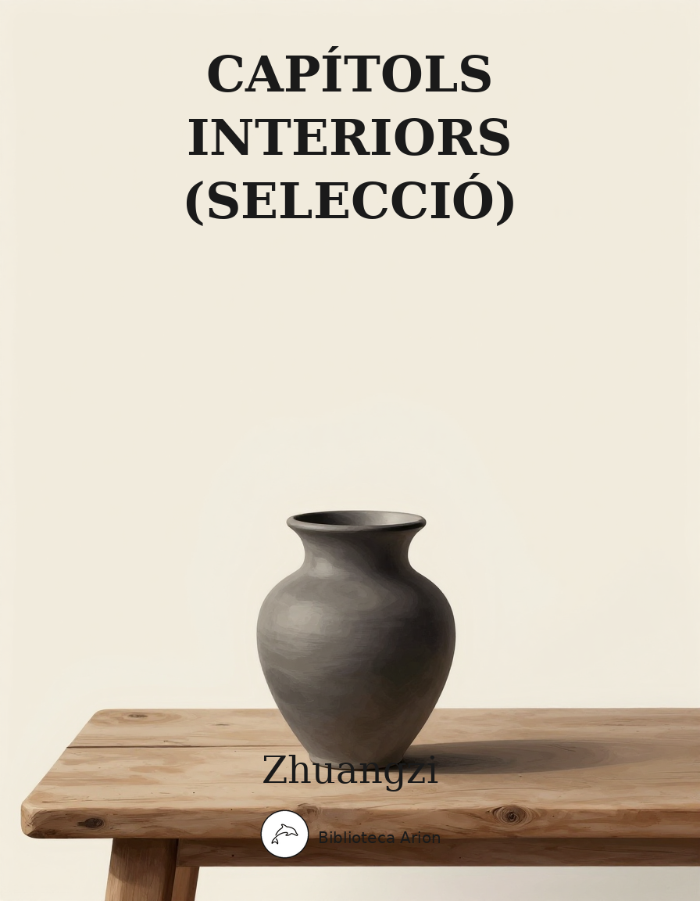

Capítols interiors (selecció)
莊子·內篇
Els set capítols interiors del Zhuangzi, considerats el nucli autèntic de l'obra i atribuïts directament a Zhuang Zhou. Text fonamental del taoisme filosòfic que explora la llibertat absoluta, la relativitat de les perspectives, el no-acció (wu wei) i la transformació de les coses, amb paràboles cèlebres com el somni de la papallona i el cuiner Ding.
莊子 — 內篇
逍遙遊第一
北冥有魚，其名爲鯤。鯤之大，不知其幾千里也。化而爲鳥，其名爲鵬。鵬之背，不知其幾千里也；怒而飛，其翼若垂天之雲。是鳥也，海運則將徙於南冥。南冥者，天池也。《齊諧》者，志怪者也。《諧》之言曰：「鵬之徙於南冥也，水擊三千里，摶扶摇而上者九萬里，去以六月息者也。」野馬也，塵埃也，生物之以息相吹也。天之蒼蒼，其正色邪？其遠而无所至極邪？其視下也，亦若是則已矣。且夫水之積也不厚，則負大舟也无力。覆杯水於坳堂之上，則芥爲之舟；置杯焉則膠，水淺而舟大也。風之積也不厚，則其負大翼也无力。故九萬里，則風斯在下矣，而後乃今培風；背負青天而莫之夭閼者，而後乃今將圖南。
蜩與鷽鳩笑之曰：「我決起而飛，搶榆枋，時則不至，而控於地而已矣，奚以之九萬里而南爲！」適莽蒼者，三飧而反，腹猶果然；適百里者，宿舂糧；適千里者，三月聚糧。之二蟲又何知！小知不及大知，小年不及大年。奚以知其然也？朝菌不知晦朔，蟪蛄不知春秋，此小年也。楚之南有冥靈者，以五百歲爲春，五百歲爲秋；上古有大椿者，以八千歲爲春，八千歲爲秋。而彭祖乃今以久特聞，衆人匹之，不亦悲乎！
湯之問棘也是已。窮髮之北有冥海者，天池也。有魚焉，其廣數千里，未有知其脩者，其名爲鯤。有鳥焉，其名爲鵬，背若太山，翼若垂天之雲，摶扶摇羊角而上者九萬里，絕雲氣，負青天，然後圖南，且適南冥也。斥鴳笑之曰：「彼且奚適也？我騰躍而上，不過數仞而下，翱翔蓬蒿之間，此亦飛之至也。而彼且奚適也？」此小大之辨也。故夫知效一官，行比一鄉，德合一君，而徵一國者，其自視也亦若此矣。而宋榮子猶然笑之。且舉世而譽之而不加勸，舉世而非之而不加沮，定乎內外之分，辨乎榮辱之境，斯已矣。彼其於世，未數數然也。雖然，猶有未樹也。夫列子御風而行，泠然善也，旬有五日而後反。彼於致福者，未數數然也。此雖免乎行，猶有所待者也。若夫乘天地之正，而御六氣之辨，以遊无窮者，彼且惡乎待哉！故曰：至人无己，神人无功，聖人无名。
堯讓天下於許繇，曰：「日月出矣而爝火不息，其於光也，不亦難乎！時雨降矣而猶浸灌，其於澤也，不亦勞乎！夫子立而天下治，而我猶尸之，吾自視缺然，請致天下。」許繇曰：「子治天下，天下既已治也。而我猶代子，吾將爲名乎？名者，實之賓也。吾將爲賓乎？鷦鷯巢於深林，不過一枝；偃鼠飲河，不過滿腹。歸休乎君，予无所用天下爲！庖人雖不治庖，尸祝不越樽俎而代之矣。」
肩吾問於連叔曰：「吾聞言於接輿，大而无當，往而不返。吾驚怖其言，猶河漢而无極也，大有逕庭，不近人情焉。」連叔曰：「其言謂何哉？」曰：「『藐姑射之山，有神人居焉，肌膚若冰雪，淖約若處子。不食五穀，吸風飲露。乘雲氣，御飛龍，而遊乎四海之外。其神凝，使物不疵癘而年穀熟。』吾以是狂而不信也。」連叔曰：「然。瞽者无以與乎文章之觀，聾者无以與乎鍾鼓之聲。豈唯形骸有聾盲哉？夫知亦有之。是其言也，猶時女也。之人也，之德也，將旁礡萬物以爲一。世蘄乎亂，孰弊弊焉以天下爲事！之人也，物莫之傷，大浸稽天而不溺，大旱金石流、土山焦而不熱，是其塵垢秕穅，將猶陶鑄堯、舜者也，孰肯以物爲事！」
宋人資章甫而適諸越，越人斷髮文身，无所用之。堯治天下之民，平海內之政，往見四子藐姑射之山，汾水之陽，窅然喪其天下焉。
惠子謂莊子曰：「魏王貽我大瓠之種，我樹之成而實五石。以盛水漿，其堅不能自舉也。剖之以爲瓢，則瓠落无所容。非不呺然大也，吾爲其无用而掊之。」莊子曰：「夫子固拙於用大矣。宋人有善爲不龜手之藥者，世世以洴澼絖爲事。客聞之，請買其方百金。聚族而謀曰：『我世世爲洴澼絖，不過數金；今一朝而鬻技百金，請與之。』客得之，以說吳王。越有難，吳王使之將，冬與越人水戰，大敗越人，裂地而封之。能不龜手，一也；或以封，或不免於洴澼絖，則所用之異也。今子有五石之瓠，何不慮以爲大樽而浮乎江湖，而憂其瓠落无所容？則夫子猶有蓬之心也夫！」
惠子謂莊子曰：「吾有大樹，人謂之樗。其大本擁腫而不中繩墨，其小枝卷曲而不中規矩，立之塗，匠者不顧。今子之言，大而无用，衆所同去也。」莊子曰：「子獨不見狸狌乎？卑身而伏，以候敖者；東西跳梁，不避高下；中於機辟，死於罔罟。今夫斄牛，其大若垂天之雲。此能爲大矣，而不能執鼠。今子有大樹，患其无用，何不樹之於无何有之鄉，廣莫之野，彷徨乎无爲其側，逍遥乎寢卧其下？不夭斤斧，物无害者，无所可用，安所困苦哉！」
齊物論第二
南郭子綦隱几而坐，仰天而嘘，嗒焉似喪其耦。顏成子游立侍乎前，曰：「何居乎？形固可使如槁木，而心固可使如死灰乎？今之隱几者，非昔之隱几者也。」子綦曰：「偃，不亦善乎，而問之也！今者吾喪我，汝知之乎？汝聞人籟而未聞地籟，汝聞地籟而未聞天籟夫！」子游曰：「敢問其方。」子綦曰：「夫大塊噫氣，其名爲風。是唯无作，作則萬竅怒呺。而獨不聞之翏翏乎？山林之畏隹，大木百圍之竅穴，似鼻，似口，似耳，似枅，似圈，似臼，似洼者，似汙者；激者，謞者，叱者，吸者，叫者，譹者，宎者，咬者，前者唱于而隨者唱喁，泠風則小和，飄風則大和，厲風濟則衆竅爲虚。而獨不見之調調、之刁刁乎？」子游曰：「地籟則衆竅是已，人籟則比竹是已。敢問天籟。」子綦曰：「夫吹萬不同，而使其自己也。咸其自取，怒者其誰邪！」
大知閑閑，小知間間；大言炎炎，小言詹詹。其寐也魂交，其覺也形開，與接爲構，日以心鬬。縵者，窖者，密者。小恐惴惴，大恐縵縵。其發若機栝，其司是非之謂也；其留如詛盟，其守勝之謂也；其殺如秋冬，以言其日消也；其溺之所爲之，不可使復之也；其厭也如緘，以言其老洫也。近死之心，莫使復陽也。喜怒哀樂，慮嘆變慹，姚佚啓態，樂出虚，蒸成菌。日夜相代乎前，而莫知其所萌。已乎，已乎！旦暮得此，其所由以生乎！非彼无我，非我无所取，是亦近矣，而不知其所爲使。若有真宰，而特不得其朕，可行已信，而不見其形，有情而无形。百骸、九竅、六藏，賅而存焉，吾誰與爲親？汝皆悅之乎？其有私焉？如是，皆有爲臣妾乎？其臣妾不足以相治乎？其遞相爲君臣乎？其有真君存焉。如求得其情與不得，无益損乎其真。一受其成形，不亡以待盡，與物相刃相靡，其行盡如馳，而莫之能止，不亦悲乎！終身役役而不見其成功，𦬼然疲役而不知其所歸，可不哀邪！人謂之不死，奚益！其形化，其心與之然，可不謂大哀乎？人之生也，固若是芒乎？其我獨芒，而人亦有不芒者乎？夫隨其成心而師之，誰獨且无師乎？奚必知代而心自取者有之？愚者與有焉。未成乎心而有是非，是今日適越而昔至也，是以无有爲有。无有爲有，雖有神禹，且不能知，吾獨且奈何哉！
夫言非吹也，言者有言，其所言者特未定也。果有言邪？其未嘗有言邪？其以爲異於鷇音，亦有辯乎？其无辯乎？道惡乎隱而有真僞？言惡乎隱而有是非？道惡乎往而不存？言惡乎存而不可？道隱於小成，言隱於榮華。故有儒墨之是非，以是其所非而非其所是。欲是其所非而非其所是，則莫若以明。物无非彼，物无非是。自彼則不見，自知則知之。故曰：彼出於是，是亦因彼。彼、是，方生之說也。雖然，方生方死，方死方生；方可方不可，方不可方可；因是因非，因非因是。是以聖人不由，而照之于天，亦因是也。是亦彼也，彼亦是也。彼亦一是非，此亦一是非。果且有彼是乎哉？果且无彼是乎哉？彼是莫得其偶，謂之道樞。樞始得其環中，以應无窮。是亦一无窮，非亦一无窮也。故曰「莫若以明」。
以指喻指之非指，不若以非指喻指之非指也；以馬喻馬之非馬，不若以非馬喻馬之非馬也。天地一指也，萬物一馬也。可乎可，不可乎不可。道行之而成，物謂之而然。惡乎然？然於然。惡乎不然？不然於不然。物固有所然，物固有所可。无物不然，无物不可。故爲是舉莛與楹，厲與西施，恢恑憰怪，道通爲一。其分也，成也；其成也，毀也。凡物无成與毀，復通爲一。唯達者知通爲一，爲是不用而寓諸庸。庸也者，用也；用也者，通也；通也者，得也。適得而幾矣，因是已。已而不知其然，謂之道。勞神明爲一而不知其同也，謂之朝三。何謂朝三？曰：狙公賦芧，曰：「朝三而暮四。」衆狙皆怒。曰：「然則朝四而暮三。」衆狙皆悅。名實未虧而喜怒爲用，亦因是也。是以聖人和之以是非而休乎天均，是之謂兩行。
古之人，其知有所至矣。惡乎至？有以爲未始有物者，至矣，盡矣，不可以加矣。其次以爲有物矣而未始有封也，其次以爲有封焉而未始有是非也。是非之彰也，道之所以虧也。道之所以虧，愛之所以成。果且有成與虧乎哉？果且无成與虧乎哉？有成與虧，故昭氏之鼓琴也；无成與虧，故昭氏之不鼓琴也。昭文之鼓琴也，師曠之枝策也，惠子之據梧也，三子之知幾乎，皆其盛者也，故載之末年。唯其好之也，以異於彼，其好之也，欲以明之。彼非所明而明之，故以堅白之昧終。而其子又以文之綸終，終身无成。若是而可謂成乎，雖我亦成也；若是而不可謂成乎，物與我无成也。是故滑疑之耀，聖人之所圖也。爲是不用而寓諸庸，此之謂以明。
今且有言於此，不知其與是類乎？其與是不類乎？類與不類，相與爲類，則與彼无以異矣。雖然，請嘗言之。有始也者，有未始有始也者，有未始有夫未始有始也者；有有也者，有无也者，有未始有无也者，有未始有夫未始有无也者。俄而有无矣，而未知有无之果孰有孰无也。今我則已有謂矣，而未知吾所謂之，其果有謂乎？其果无謂乎？天下莫大於秋豪之末，而太山爲小；莫壽乎殤子，而彭祖爲夭。天地與我並生，而萬物與我爲一。既已爲一矣，且得有言乎？既已謂之一矣，且得无言乎？一與言爲二，二與一爲三。自此以往，巧歷不能得，而況其凡乎！故自无適有，以至於三，而況自有適有乎！无適焉，因是已。
夫道未始有封，言未始有常，爲是而有畛也，請言其畛：有左、有右，有倫、有義，有分、有辯，有競、有爭，此之謂八德。六合之外，聖人存而不論；六合之內，聖人論而不議。《春秋》經世，先王之志，聖人議而不辯。故分也者，有不分也；辯也者，有不辯也。曰：何也？聖人懷之，衆人辯之以相示也，故曰：辯也者，有不見也。夫大道不稱，大辯不言，大仁不仁，大廉不嗛，大勇不忮。道昭而不道，言辯而不及，仁常而不成，廉清而不信，勇忮而不成，五者园而幾向方矣。故知止其所不知，至矣。孰知不言之辯，不道之道？若有能知，此之謂天府。注焉而不滿，酌焉而不竭，而不知其所由來，此之謂葆光。
故昔者堯問於舜曰：「我欲伐宗、膾、胥敖，南面而不釋然，其故何也？」舜曰：「夫三子者，猶存乎蓬艾之間。若不釋然，何哉？昔者十日並出，萬物皆照，而況德之進乎日者乎！」
齧缺問乎王倪曰：「子知物之所同是乎？」曰：「吾惡乎知之！」「子知子之所不知邪？」曰：「吾惡乎知之！」「然則物无知邪？」曰：「吾惡乎知之！雖然，嘗試言之。庸詎知吾所謂『知之』非不知邪？庸詎知吾所謂『不知』之非知邪？且吾嘗試問乎汝：民溼寢則腰疾偏死，鰌然乎哉？木處則惴慄恂懼，猨猴然乎哉？三者孰知正處？民食芻豢，麋鹿食薦，蝍蛆甘帶，鴟鴉耆鼠，四者孰知正味？猨猵狙以爲雌，麋與鹿交，鰌與魚游。毛嬙、麗姬，人之所美也，魚見之深入，鳥見之高飛，麋鹿見之決驟，四者孰知天下之正色哉？自我觀之，仁義之端，是非之塗，樊然殽亂，吾惡能知其辯！」齧缺曰：「子不知利害，則至人固不知利害乎？」王倪曰：「至人神矣！大澤焚而不能熱，河漢沍而不能寒，疾雷破山、風振海而不能驚。若然者，乘雲氣，騎日月，而遊乎四海之外。死生无變於己，而況利害之端乎！」
瞿鵲子問乎長梧子曰：「吾聞諸夫子，聖人不從事於務，不就利，不違害，不喜求，不緣道，无謂有謂，有謂无謂，而遊乎塵垢之外。夫子以爲孟浪之言，而我以爲妙道之行也。吾子以爲奚若？」長梧子曰：「是黃帝之所聽瑩也，而丘也何足以知之！且汝亦大早計，見卵而求時夜，見彈而求鴞炙。予嘗爲汝妄言之，汝以妄聽之。奚旁日月，挾宇宙，爲其䐇合，置其滑涽，以隸相尊？衆人役役，聖人愚芚，參萬歲而一成純。萬物盡然，而以是相藴。予惡乎知悅生之非惑邪？予惡乎知惡死之非弱喪而不知歸者邪？麗之姬，艾封人之子也。晉國之始得之也，涕泣沾襟；及其至於王所，與王同匡牀，食芻豢，而後悔其泣也。予惡乎知夫死者不悔其始之蘄生乎？夢飲酒者，旦而哭泣；夢哭泣者，旦而田獵。方其夢也，不知其夢也。夢之中又占其夢焉，覺而後知其夢也。且有大覺而後知此其大夢也，而愚者自以爲覺，竊竊然知之。君乎，牧乎，固哉！丘也與汝，皆夢也；予謂汝夢，亦夢也。是其言也，其名爲弔詭。萬世之後，而一遇大聖知其解者，是旦暮遇之也。既使我與若辯矣，若勝我，我不若勝，若果是也，我果非也邪？我勝若，若不吾勝，我果是也，而果非也邪？其或是也，其或非也邪？其俱是也，其俱非也邪？我與若不能相知也。則人固受其黮闇，吾誰使正之？使同乎若者正之，既與若同矣，惡能正之？使同乎我者正之，既同乎我矣，惡能正之？使異乎我與若者正之，既異乎我與若矣，惡能正之？使同乎我與若者正之，既同乎我與若矣，惡能正之？然則我與若與人，俱不能相知也，而待彼也邪？何謂和之以天倪？曰：是不是，然不然。是若果是也，則是之異乎不是也亦无辯；然若果然也，則然之異乎不然也亦无辯。化聲之相待，若其不相待。和之以天倪，因之以曼衍，所以窮年也。忘年忘義，振於无竟，故寓諸无竟。」
罔兩問景曰：「曩子行，今子止；曩子坐，今子起，何其无特操與？」景曰：「吾有待而然者邪？吾所待又有待而然者邪？吾待蛇蚹蜩翼邪？惡識所以然？惡識所以不然？」
昔者莊周夢爲胡蝶，栩栩然胡蝶也，自喻適志與，不知周也。俄然覺，則蘧蘧然周也。不知周之夢爲胡蝶與？胡蝶之夢爲周與？周與胡蝶，則必有分矣，此之謂物化。
養生主第三
吾生也有涯，而知也无涯。以有涯隨无涯，殆已。已而爲知者，殆而已矣。爲善无近名，爲惡无近刑，緣督以爲經，可以保身，可以全生，可以養親，可以盡年。
庖丁爲文惠君解牛，手之所觸，肩之所倚，足之所履，膝之所踦，砉然嚮然，奏刀騞然，莫不中音，合於《桑林》之舞，乃中《經首》之會。文惠君曰：「譆，善哉！技蓋至此乎？」庖丁釋刀對曰：「臣之所好者，道也，進乎技矣。始臣之解牛之時，所見无非牛者。三年之後，未嘗見全牛也。方今之時，臣以神遇而不以目視，官知止而神欲行，依乎天理，批大郤，導大窾，因其固然。技經肯綮之未嘗，而況大軱乎？良庖歲更刀，割也；族庖月更刀，折也。今臣之刀十九年矣，所解數千牛矣，而刀刃若新發於硎。彼節者有間，而刀刃者无厚，以无厚入有間，恢恢乎其於遊刃必有餘地矣，是以十九年而刀刃若新發於硎。雖然，每至於族，吾見其難爲，怵然爲戒，視爲止，行爲遟，動刀甚微，謋然已解，如土委地。提刀而立，爲之四顧，爲之躊躇滿志，善刀而藏之。」文惠君曰：「善哉！吾聞庖丁之言，得養生焉。」
公文軒見右師而驚，曰：「是何人也？惡乎介也？天與，其人與？」曰：「天也，非人也。天之生是使獨也，人之貌有與也，以是知其天也，非人也。」澤雉十步一啄，百步一飲，不蘄畜乎樊中。神雖王，不善也。
老聃死，秦失弔之，三號而出。弟子曰：「非夫子之友邪？」曰：「然。」「然則弔焉若此，可乎？」曰：「然。始也吾以爲其人也，而今非也。向吾入而弔焉，有老者哭之，如哭其子；少者哭之，如哭其母。彼其所以會之，必有不蘄言而言，不蘄哭而哭者，是遁天倍情，忘其所受，古者謂之遁天之刑。適來，夫子時也；適去，夫子順也。安時而處順，哀樂不能入也，古者謂是帝之縣解。」指窮於爲薪，火傳也，不知其盡也。
人間世第四
顏回見仲尼，請行。曰：「奚之？」曰：「將之衛。」曰：「奚爲焉？」曰：「回聞衛君，其年壯，其行獨，輕用其國，而不見其過；輕用民死，死者以國量乎澤若蕉，民其无如矣。回嘗聞之夫子曰：『治國去之，亂國就之，醫門多疾。』願以所聞思其則，庶幾其國有瘳乎！」仲尼曰：「譆！若殆往而刑耳！夫道不欲雜，雜則多，多則擾，擾則憂，憂而不救。古之至人，先存諸己，而後存諸人。所存於己者未定，何暇至於暴人之所行！且若亦知夫德之所蕩而知之所爲出乎哉？德蕩乎名，知出乎爭。名也者，相軋也；知也者，爭之器也。二者凶器，非所以盡行也。且德厚信矼，未達人氣；名聞不爭，未達人心，而彊以仁義繩墨之言術暴人之前者，是以人惡有其美也，命之曰菑人。菑人者，人必反菑之，若殆爲人菑夫！且苟爲悅賢而惡不肖，惡用而求有以異？若唯无詔，王公必將乘人而鬭其捷，而目將熒之，而色將平之，口將營之，容將形之，心且成之。是以火救火，以水救水，名之曰益多，順始无窮。若殆以不信厚言，必死於暴人之前矣！且昔者桀殺關龍逢，紂殺王子比干，是皆脩其身以下傴拊人之民，以下拂其上者也，故其君因其脩以擠之。是好名者也。昔者堯攻叢枝、胥敖，禹攻有扈，國爲虚厲，身爲刑戮，其用兵不止，其求實无已。是皆求名實者也，而獨不聞之乎：名實者，聖人之所不能勝也，而況若乎！雖然，若必有以也，嘗以語我來！」顏回曰：「端而虚，勉而一，則可乎？」曰：「惡！惡可！夫以陽爲充孔揚，采色不定，常人之所不違，因案人之所感，以求容與其心，名之曰『日漸之德』不成，而況大德乎！將執而不化，外合而內不訾，其庸詎可乎！」「然則我內直而外曲，成而上比。內直者，與天爲徒。與天爲徒者，知天子之與己皆天之所子，而獨以己言蘄乎而人善之，蘄乎而人不善之邪？若然者，人謂之童子，是之謂與天爲徒。外曲者，與人之爲徒也。擎跽曲拳，人臣之禮也，人皆爲之，吾敢不爲邪！爲人之所爲者，人亦无疵焉，是之謂與人爲徒。成而上比者，與古爲徒。其言雖教，讁之實也。古之有也，非吾有也。若然者，雖直不爲病，是之謂與古爲徒。若是則可乎？」仲尼曰：「惡！惡可！太多政法而不諜，雖固，亦无罪。雖然，止是耳矣，夫胡可以及化！猶師心者也。」顏回曰：「吾无以進矣，敢問其方。」仲尼曰：「齋，吾將語若！有而爲，其易邪？易之者，皞天不宜。」顏回曰：「回之家貧，唯不飲酒、不茹葷者數月矣。若此，則可以爲齋乎？」曰：「是祭祀之齋，非心齋也。」回曰：「敢問心齋。」仲尼曰：「若一志，无聽之以耳而聽之以心，无聽之以心而聽之以氣。聽止於耳，心止於符。氣也者，虚而待物者也。唯道集虚。虚者，心齋也。」顏回曰：「回之未始得使，實自回也；得使之也，未始有回也，可謂虚乎？」夫子曰：「盡矣。吾語若。若能入遊其樊而无感其名，入則鳴，不入則止，无門无毒，一宅而寓於不得已，則幾矣。絕迹易，无行地難。爲人使，易以僞；爲天使，難以僞。聞以有翼飛者矣，未聞以无翼飛者也；聞以有知知者矣，未聞以无知知者也。瞻彼闋者，虚室生白，吉祥止止；夫且不止，是之謂坐馳。夫徇耳目內通而外於心知，鬼神將來舍，而況人乎！是萬物之化也，禹、舜之所紐也，伏羲、几蘧之所行終，而況散焉者乎！」
葉公子高將使於齊，問於仲尼曰：「王使諸梁也甚重，齊之待使者，蓋將甚敬而不急。匹夫猶未可動也，而況諸侯乎！吾甚慄之。子常語諸梁也，曰：『凡事若小若大，寡不道以懽成。事若不成，則必有人道之患；事若成，則必有陰陽之患。若成若不成而後无患者，唯有德者能之。』吾食也埶粗而不臧，爨无欲清之人。今吾朝受命而夕飲冰，我其內熱與？吾未至乎事之情，而既有陰陽之患矣；事若不成，必有人道之患。是兩也，爲人臣者不足以任之，子其有以語我來？」仲尼曰：「天下有大戒二：其一，命也；其一，義也。子之愛親，命也，不可解於心；臣之事君，義也，无適而非君也，无所逃於天地之間，是之謂大戒。是以夫事其親者，不擇地而安之，孝之至也；夫事其君者，不擇事而安之，忠之盛也；自事其心者，哀樂不易施乎前，知其不可奈何而安之若命，德之至也。爲人臣子者，固有所不得已，行事之情而忘其身，何暇至於悅生而惡死？夫子其行可矣！丘請復以所聞：凡交，近則必相靡以信，遠則必忠之以言，言必或傳之。夫傳兩喜兩怒之言，天下之難者也。夫兩喜必多溢美之言，兩怒必多溢惡之言。凡溢之類妄，妄則其信之也莫，莫則傳言者殃。故法言曰：『傳其常情，无傳其溢言，則幾乎全。』且以巧鬭力者，始乎陽，常卒乎陰，泰至則多奇巧；以禮飲酒者，始乎治，常卒乎亂，泰至則多奇樂。凡事亦然，始乎諒，常卒乎鄙；其作始也簡，其將畢也必巨。言者，風波也；行者，實喪也。夫風波易以動，實喪易以危。故忿設无由，巧言偏辭。獸死不擇音，氣息茀然，於是並生心厲。剋核太至，則必有不肖之心應之，而不知其然也。苟爲不知其然也，孰知其所終？故法言曰：『无遷令，无勸成。』過度，益也，遷令、勸成殆事。美成在久，惡成不及改，可不慎與！且夫乘物以遊心，託不得已以養中，至矣，何作爲報也？莫若爲致命，此其難者。」
顏闔將傅衛靈公太子，而問於蘧伯玉曰：「有人於此，其德天殺。與之爲无方，則危吾國；與之爲有方，則危吾身。其知適足以知人之過，而不知其所以過。若然者，吾奈之何？」蘧伯玉曰：「善哉問乎！戒之，慎之，正汝身哉！形莫若就，心莫若和。雖然，之二者有患。就不欲入，和不欲出。形就而入，且爲顛爲滅，爲崩爲蹶；心和而出，且爲聲爲名，爲妖爲孽。彼且爲嬰兒，亦與之爲嬰兒；彼且爲无町畦，亦與之爲无町畦；彼且爲无崖，亦與之爲无崖。達之，入於无疵。汝不知夫螳蜋乎？怒其臂以當車轍，不知其不勝任也，是其才之美者也。戒之，慎之！積伐而美者以犯之，幾矣。汝不知夫養虎者乎？不敢以生物與之，爲其殺之之怒也；不敢以全物與之，爲其決之之怒也。時其飢飽，達其怒心。虎之與人異類，而媚養己者，順也；故其殺者，逆也。夫愛馬者，以筐盛矢，以蜄盛溺；適有蚉䖟僕緣，而拊之不時，則缺銜毀首碎胷。意有所至而愛有所亡，可不慎邪！」
匠石之齊，至乎曲轅，見櫟社樹。其大蔽牛，絜之百圍，其高臨山十仞而後有枝，其可以爲舟者旁十數。觀者如市，匠伯不顧，遂行不輟。弟子厭觀之，走及匠石，曰：「自吾執斧斤以隨夫子，未嘗見材如此其美也。先生不肯視，行不輟，何邪？」曰：「已矣，勿言之矣！散木也，以爲舟則沈，以爲棺槨則速腐，以爲器則速毀，以爲門户則液樠，以爲柱則蠹。是不材之木也，无所可用，故能若是之壽。」匠石歸，櫟社見夢曰：「汝將惡乎比予哉？若將比予於文木邪？夫柤梨橘柚，果蓏之屬，實熟則剝則辱，大枝折，小枝泄，此以其能苦其生者也，故不終其天年而中道夭，自掊擊於世俗者也。物莫不若是。且予求无所可用久矣，幾死，乃今得之，爲予大用。使予也而有用，且得有此大也邪？且也若與予也，皆物也，奈何哉其相物也？而幾死之散人，又惡知散木！」匠石覺而診其夢，弟子曰：「趣取无用，則爲社何邪？」曰：「密！若无言。彼亦直寄焉，以爲不知己者詬厲也。不爲社者，且幾有翦乎！且也彼其所保與衆異，而以義譽之，不亦遠乎！」
南伯子綦遊乎商之丘，見大木焉，有異，結駟千乘，隱將芘其所藾。子綦曰：「此何木也哉？此必有異材夫！」仰而視其細枝，則拳曲而不可以爲棟梁；俯而視其大根，則軸解而不可以爲棺槨；咶其葉，則口爛而爲傷；嗅之，則使人狂酲三日而不已。子綦曰：「此果不材之木也，以至於此其大也。嗟乎，神人以此不材！」宋有荆氏者，宜楸柏桑。其拱把而上者，求狙猴之杙者斬之；三圍四圍，求高名之麗者斬之；七圍八圍，貴人富商之家求禪傍者斬之。故未終其天年，而中道之夭於斧斤，此材之患也。故解之以牛之白顙者，與豚之亢鼻者，與人有痔病者，不可以適河，此皆巫祝以知之矣，所以爲不祥也，此乃神人之所以爲大祥也。
支離疏者，頤隱於齊，肩高於頂，會撮指天，五管在上，兩髀爲脅。挫鍼治繲，足以餬口；鼓筴播精，足以食十人。上徵武士，則支離攘臂於其間；上有大役，則支離以有常疾不受功；上與病者粟，則受三鍾與十束薪。夫支離其形者，猶足以養其身，終其天年，又況支離其德者乎！
孔子適楚，楚狂接輿遊其門，曰：「鳳兮鳳兮，何如德之衰也！來世不可待，往世不可追也。天下有道，聖人成焉；天下无道，聖人生焉。方今之時，僅免刑焉。福輕乎羽，莫之知載；禍重乎地，莫之知避。已乎已乎，臨人以德；殆乎殆乎，畫地而趨！迷陽迷陽，无傷吾行。吾行郤曲，无傷吾足。」山木自寇也，膏火自煎也。桂可食，故伐之；漆可用，故割之。人皆知有用之用，而莫知无用之用也。
德充符第五
魯有兀者王駘，從之遊者與仲尼相若。常季問於仲尼曰：「王駘，兀者也，從之遊者與夫子中分魯。立不教，坐不議，虚而往，實而歸。固有不言之教，无形而心成者邪？是何人也？」仲尼曰：「夫子，聖人也。丘也直後而未往耳。丘將以爲師，而況不若丘者乎！奚假魯國，丘將引天下而與從之。」常季曰：「彼兀者也，而王先生，其與庸亦遠矣。若然者，其用心也獨若之何？」仲尼曰：「死生亦大矣，而不得與之變，雖天地覆墜，亦將不與之遺。審乎无假而不與物遷，命物之化而守其宗也。」常季曰：「何謂也？」仲尼曰：「自其異者視之，肝膽楚越也；自其同者視之，萬物皆一也。夫若然者，且不知耳目之所宜，而遊心乎德之和；物視其所一而不見其所喪，視喪其足，猶遺土也。」常季曰：「彼爲己，以其知得其心，以其心得其常心，物何爲最之哉？」仲尼曰：「人莫鑑於流水而鑑於止水。唯止，能止衆止。受命於地，唯松柏獨也在，冬夏青青；受命於天，唯舜獨也正，幸能正生，以正衆生。夫保始之徵，不懼之實，勇士一人，雄入於九軍。將求名而能自要者，而猶若是，而況官天地，府萬物，直寓六骸，象耳目，一知之所知，而心未嘗死者乎！彼且擇日而登假，人則從是也。彼且何肯以物爲事乎！」
申徒嘉，兀者也，而與鄭子產同師於伯昏无人。子產謂申徒嘉曰：「我先出則子止，子先出則我止。」其明日，又與合堂同席而坐。子產謂申徒嘉曰：「我先出則子止，子先出則我止。今我將出，子可以止乎，其未邪？且子見執政而不違，子齊執政乎？」申徒嘉曰：「先生之門，固有執政焉如此哉？子而悅子之執政而後人者也？聞之曰：『鑑明則塵垢不止，止則不明也。久與賢人處則无過。』今子之所取大者，先生也，而猶出言若是，不亦過乎！」子產曰：「子既若是矣，猶與堯爭善。計子之德，不足以自反邪？」申徒嘉曰：「自狀其過，以不當亡者衆；不狀其過，以不當存者寡。知不可奈何而安之若命，唯有德者能之。遊於羿之彀中，中央者，中地也，然而不中者，命也。人以其全足笑吾不全足者衆矣，我怫然而怒，而適先生之所，則廢然而反，不知先生之洗我以善邪？吾與夫子遊，十九年矣，而未嘗知吾兀者也。今子與我遊於形骸之內，而子索我於形骸之外，不亦過乎！」子產蹵然改容更貌，曰：「子无乃稱！」
魯有兀者叔山无趾，踵見仲尼。仲尼曰：「子不謹，前既犯患若是矣。雖今來，何及矣！」无趾曰：「吾唯不知務而輕用吾身，吾是以亡足。今吾來也，猶有尊足者存，吾是以務全之也。夫天无不覆，地无不載，吾以夫子爲天地，安知夫子之猶若是也！」孔子曰：「丘則陋矣。夫子胡不入乎，請講以所聞。」无趾出。孔子曰：「弟子勉之！夫无趾，兀者也，猶務學，以復補前行之惡，而況全德之人乎？」无趾語老聃曰：「孔丘之於至人，其未邪？彼何賓賓以學子爲？彼且蘄以諔詭幻怪之名聞，不知至人之以是爲己桎梏邪？」老聃曰：「胡不直使彼以死生爲一條，以可不可爲一貫者，解其桎梏，其可乎？」无趾曰：「天刑之，安可解！」
魯哀公問於仲尼曰：「衞有惡人焉，曰哀駘它。丈夫與之處者，思而不能去也；婦人見之，請於父母曰『與爲人妻，寧爲夫子妾』者，十數而未止也。未嘗有聞其唱者也，常和人而已矣。无君人之位以濟乎人之死，无聚祿以望人之腹，又以惡駭天下，和而不唱，知不出乎四域，且而雌雄合乎前，是必有異乎人者也。寡人召而觀之，果以惡駭天下。與寡人處，不至以月數，而寡人有意乎其爲人也；不至乎期年，而寡人信之。國无宰，寡人傳國焉，悶然而後應，氾若而辭。寡人醜乎，卒授之國。无幾何也，去寡人而行。寡人卹焉，若有亡也，若无與樂是國也。是何人者也？」仲尼曰：「丘也嘗使於楚矣，適見豚子食於其死母者，少焉眴若，皆棄之而走，不見己焉爾，不得類焉爾。所愛其母者，非愛其形也，愛使其形者也。戰而死者，其人之葬也不以翣資，刖者之屨，无爲愛之，皆无其本矣。爲天子之諸御，不爪翦，不穿耳，取妻者止於外，不得復使。形全猶足以爲爾，而況全德之人乎！今哀駘它未言而信，无功而親，使人授己國，唯恐其不受也，是必才全而德不形者也。」哀公曰：「何謂才全？」仲尼曰：「死生存亡、窮達貧富、賢與不肖、毀譽、飢渴、寒暑，是事之變，命之行也，日夜相代乎前，而知不能規乎其始者也，故不足以滑和，不可入於靈府。使之和豫通而不失於兌，使日夜无郤而與物爲春，是接而生時乎心者也，是之謂才全。」「何謂德不形？」曰：「平者，水停之盛也。其可以爲法也，內保之而外不蕩也。德者，成和之脩也。德不形者，物不能離也。」哀公異日以告閔子曰：「始也吾以南面而君天下，執民之紀而憂其死，吾自以爲至通矣。今吾聞至人之言，恐吾无其實，輕用吾身而亡吾國。吾與孔丘，非君臣也，德友而已矣！」
闉跂支離无脤說衞靈公，靈公悅之，而視全人，其脰肩肩。甕㼜大癭說齊桓公，桓公說之，而視全人，其脰肩肩。故德有所長而形有所忘。人不忘其所忘，而忘其所不忘，此謂誠忘。故聖人有所遊，而知爲孽，約爲膠，德爲接，工爲商。聖人不謀，惡用知？不斲，惡用膠？无喪，惡用德？不貨，惡用商？四者，天鬻也。天鬻也者，天食也。既受食於天，又惡用人？有人之形，无人之情。有人之形，故羣於人；无人之情，故是非不得於身。眇乎小哉，所以屬於人也；謷乎大哉，獨成其天！
惠子謂莊子曰：「人故无情乎？」莊子曰：「然。」惠子曰：「人而无情，何以謂之人？」莊子曰：「道與之貌，天與之形，惡得不謂之人？」惠子曰：「既謂之人，惡得无情？」莊子曰：「是非吾所謂情也。吾所謂无情者，言人之不以好惡內傷其身，常因自然而不益生也。」惠子曰：「不益生，何以有其身？」莊子曰：「道與之貌，天與之形，无以好惡內傷其身。今子外乎子之神，勞乎子之精，倚樹而吟，據槁梧而瞑。天選子之形，子以堅白鳴！」
大宗師第六
知天之所爲，知人之所爲者，至矣。知天之所爲者，天而生也；知人之所爲者，以其知之所知以養其知之所不知，終其天年而不中道夭者，是知之盛也。雖然，有患。夫知有所待而後當，其所待者特未定也。庸詎知吾所謂天之非人乎？所謂人之非天乎？且有真人而後有真知。
何謂真人？古之真人，不逆寡，不雄成，不謩士。若然者，過而弗悔，當而不自得也。若然者，登高不慄，入水不濡，入火不熱，是知之能登假於道也若此。古之真人，其寢不夢，其覺无憂，其食不甘，其息深深。真人之息以踵，衆人之息以喉。屈服者，其嗌言若哇。其耆欲深者，其天機淺。古之真人，不知悅生，不知惡死；其出不訢，其入不距；翛然而往，翛然而來而已矣。不忘其所始，不求其所終；受而喜之，忘而復之，是之謂不以心捐道，不以人助天，是之謂真人。若然者，其心志，其容寂，其顙頯，淒然似秋，煖然似春，喜怒通四時，與物有宜而莫知其極。故聖人之用兵也，亡國而不失人心，利澤施乎萬世，不爲愛人。故樂通物，非聖人也；有親，非仁也；天時，非賢也；利害不通，非君子也；行名失己，非士也；亡身不真，非役人也。若狐不偕、務光、伯夷、叔齊、箕子、胥餘、紀他、申徒狄，是役人之役，適人之適，而不自適其適者也。古之真人，其狀義而不朋，若不足而不承；與乎其觚而不堅也，張乎其虚而不華也；邴邴乎其似喜乎，崔乎其不得已乎；滀乎進我色也，與乎止我德也；厲乎其似世乎，謷乎其未可制也；連乎其似好閉也，悗乎忘其言也。以刑爲體，以禮爲翼，以知爲時，以德爲循。以刑爲體者，綽乎其殺也；以禮爲翼者，所以行於世也；以知爲時者，不得已於事也；以德爲循者，言其與有足者至於丘也，而人真以爲勤行者也。故其好之也一，其弗好之也一。其一也一，其不一也一。其一與天爲徒，其不一與人爲徒。天與人不相勝也，是之謂真人。
死生，命也；其有夜旦之常，天也。人之有所不得與，皆物之情也。彼特以天爲父，而身猶愛之，而況其卓乎？人特以有君爲愈乎己，而身猶死之，而況其真乎？泉涸，魚相與處於陸，相呴以濕，相濡以沫，不如相忘於江湖。與其譽堯而非桀也，不如兩忘而化其道。夫大塊載我以形，勞我以生，佚我以老，息我以死，故善吾生者，乃所以善吾死也。夫藏舟於壑，藏山於澤，謂之固矣，然而夜半有力者負之而走，昧者不知也。藏小大有宜，猶有所遯。若夫藏天下於天下而不得所遯，是恆物之大情也。特犯人之形而猶喜之，若人之形者，萬化而未始有極也，其爲樂可勝計邪！故聖人將遊於物之所不得遯而皆存。善夭善老，善始善終，人猶效之，又況萬物之所係，而一化之所待乎！
夫道，有情有信，无爲无形；可傳而不可受，可得而不可見；自本自根，未有天地，自古以固存；神鬼神帝，生天生地；在太極之先而不爲高，在六極之下而不爲深；先天地生而不爲久，長於上古而不爲老。狶韋氏得之，以挈天地；伏戲得之，以襲氣母；維斗得之，終古不忒；日月得之，終古不息；堪坏得之，以襲崐崘；馮夷得之，以遊大川；肩吾得之，以處大山；黃帝得之，以登雲天；顓頊得之，以處玄官；禺强得之，立乎北極；西王母得之，坐乎少廣，莫知其始，莫知其終；彭祖得之，上及有虞，下及五伯；傅說得之，以相武丁，奄有天下，乘東維，騎箕尾，而比於列星。
南伯子葵問乎女偊曰：「子之年長矣，而色若孺子，何也？」曰：「吾聞道矣。」南伯子葵曰：「可得學邪？」曰：「惡！惡可！子非其人也。夫卜梁倚有聖人之才而无聖人之道，我有聖人之道而无聖人之才。吾欲以教之，庶幾其果爲聖人乎？不然，以聖人之道告聖人之才，亦易矣，吾猶守而告之，參日而後能外天下；已外天下矣，吾又守之，七日而後能外物；已外物矣，吾又守之，九日而後能外生；已外生矣，而後能朝徹；朝徹而後能見獨，見獨而後能无古今，无古今而後能入於不死不生。殺生者不死，生生者不生。其爲物，无不將也，无不迎也，无不毀也，无不成也。其名爲攖寧。攖寧也者，攖而後成者也。」南伯子葵曰：「子獨惡乎聞之？」曰：「聞諸副墨之子，副墨之子聞諸洛誦之孫，洛誦之孫聞之瞻明，瞻明聞之聶許，聶許聞之需役，需役聞之於謳，於謳聞之玄冥，玄冥聞之參寥，參寥聞之疑始。」
子祀、子輿、子犁、子來四人相與語曰：「孰能以无爲首，以生爲脊，以死爲尻？孰知死生存亡之一體者，吾與之友矣。」四人相視而笑，莫逆於心，遂相與爲友。俄而子輿有病，子祀往問之。曰：「偉哉，夫造物者將以予爲此拘拘也！」曲僂發背，上有五管，頤隱於齊，肩高於頂，句贅指天，陰陽之氣有沴，其心閒而无事，跰𨇤而鑑於井，曰：「嗟乎，夫造物者又將以予爲此拘拘也！」子祀曰：「汝惡之乎？」曰：「亡，予何惡！浸假而化予之左臂以爲雞，予因以求時夜；浸假而化予之右臂以爲彈，予因以求鴞炙；浸假而化予之尻以爲輪，以神爲馬，予因而乘之，豈更駕哉？且夫得者時也，失者順也，安時而處順，哀樂不能入也，此古之所謂縣解也。而不能自解者，物有結之。且夫物不勝天久矣，吾又何惡焉！」俄而子來有病，喘喘然將死，其妻子環而泣之。犁往問之，曰：「叱避，无怛化！」倚其户，與之語曰：「偉哉，造化又將奚以汝爲？將奚以汝適？以汝爲鼠肝乎？以汝爲蟲臂乎？」子來曰：「父母於子，東西南北，唯命之從。陰陽於人，不翅於父母。彼近吾死，而我不聽，我則捍矣，彼何罪焉？夫大塊載我以形，勞我以生，佚我以老，息我以死，故善吾生者，乃所以善吾死也。今大冶鑄金，金踊躍曰：『我且必爲鏌鋣！』大冶必以爲不祥之金。今一犯人之形，而曰『人耳人耳』，夫造化者必以爲不祥之人。今一以天地爲大鑪，以造化爲大冶，惡乎往而不可哉！」成然寐，蘧然覺，發然汗出。
子桑户、孟子反、子琴張三人相與友，曰：「孰能相與於无相與，相爲於无相爲？孰能登天遊霧，撓挑无極，相忘以生，无所終窮？」三人相視而笑，莫逆於心，遂相與友。莫然有間而子桑户死，未葬。孔子聞之，使子貢往待事焉。或編曲，或鼓琴，相和而歌曰：「嗟來桑户乎！嗟來桑户乎！而已反其真，而我猶爲人猗！」子貢趨而進曰：「敢問臨尸而歌，禮乎？」二人相視而笑曰：「是惡知禮意！」子貢反，以告孔子，曰：「彼何人者邪？脩行无有，而外其形骸，臨尸而歌，顏色不變，无以命之。彼何人者邪？」孔子曰：「彼，遊方之外者也；而丘，遊方之內者也。外內不相及，而丘使汝往弔之，丘則陋矣。彼方且與造物者爲人，而遊乎天地之一氣。彼以生爲附贅縣疣，以死爲決𤴯潰癕。夫若然者，又惡知死生先後之所在！假於異物，託於同體，忘其肝膽，遺其耳目，反覆終始，不知端倪，芒然彷徨乎塵垢之外，逍遥乎无爲之業。彼又惡能憒憒然爲世俗之禮以觀衆人之耳目哉！」子貢曰：「然則夫子何方之依？」孔子曰：「丘，天之戮民也。雖然，吾與汝共之。」子貢曰：「敢問其方。」孔子曰：「魚相造乎水，人相造乎道。相造乎水者，穿池而養給；相造乎道者，无事而生定。故曰：魚相忘乎江湖，人相忘乎道術。」子貢曰：「敢問畸人。」曰：「畸人者，畸於人而侔於天。故曰：天之小人，人之君子；人之君子，天之小人也。」
顏回問仲尼曰：「孟孫才，其母死，哭泣无涕，中心不慼，居喪不哀。无是三者，以善喪蓋魯國。固有无其實而得其名者乎？回壹怪之。」仲尼曰：「夫孟孫氏，盡之矣，進於知矣。唯簡之而不得，夫已有所簡矣。孟孫氏不知所以生，不知所以死；不知就先，不知就後；若化爲物，以待其所不知之化已乎！且方將化，惡知不化哉？方將不化，惡知已化哉？吾特與汝，其夢未始覺者邪？且彼有駭形而无損心，有旦宅而无情死。孟孫氏特覺，人哭亦哭，是自其所以乃，且也相與吾之耳矣，庸詎知吾所謂吾之乎？且汝夢爲鳥而厲乎天，夢爲魚而沒於淵，不識今之言者，其覺者乎，其夢者乎？造適不及笑，獻笑不及排，安排而去化，乃入於寥天一。」
意而子見許由，許由曰：「堯何以資汝？」意而子曰：「堯謂我：『汝必躬服仁義而明言是非。』」許由曰：「而奚來爲軹？夫堯既已黥汝以仁義而劓汝以是非矣，汝將何以遊夫遥蕩恣睢轉徙之塗乎？」意而子曰：「雖然，吾願遊於其藩。」許由曰：「不然。夫盲者无以與乎眉目顏色之好，瞽者无以與乎青黃黼黻之觀。」意而子曰：「夫无莊之失其美，據梁之失其力，黃帝之亡其知，皆在鑪錘之間耳。庸詎知夫造物者之不息我黥而補我劓，使我乘成以隨先生邪？」許由曰：「噫！未可知也。我爲汝言其大略。吾師乎！吾師乎！䪠萬物而不爲義，澤及萬世而不爲仁，長於上古而不爲老，覆載天地、刻彫衆形而不爲巧。此所遊已！」
顏回曰：「回益矣。」仲尼曰：「何謂也？」曰：「回忘仁義矣。」曰：「可矣，猶未也。」它日復見，曰：「回益矣。」曰：「何謂也？」曰：「回忘禮樂矣。」曰：「可矣，猶未也。」它日復見，曰：「回益矣。」曰：「何謂也？」曰：「回坐忘矣。」仲尼蹵然曰：「何謂坐忘？」顏回曰：「墮枝體，黜聰明，離形去知，同於大通，此謂坐忘。」仲尼曰：「同則无好也，化則无常也。而果其賢乎，丘也請從而後也。」
子輿與子桑友，而淋雨十日。子輿曰：「子桑殆病矣。」裹飯而往食之。至子桑之門，則若歌若哭，鼓琴曰：「父邪，母邪？天乎，人乎？」有不任其聲而趨舉其詩焉。子輿入，曰：「子之歌詩，何故若是？」曰：「吾思夫使我至此極者而弗得也。父母豈欲吾貧哉？天无私覆，地无私載，天地豈私貧我哉？求其爲之者而不得也。然而至此極者，命也夫！」
應帝王第七
齧缺問於王倪，四問而四不知。齧缺因躍而大喜，行以告蒲衣子。蒲衣子曰：「而乃今知之乎？有虞氏不及泰氏。有虞氏，其猶臧仁以要人，亦得人矣，而未始出於非人。泰氏，其卧徐徐，其覺于于；一以己爲馬，一以己爲牛；其知情信，其德甚真，而未始入於非人。」
肩吾見狂接輿。狂接輿曰：「日中始何以語汝？」肩吾曰：「告我：君人者以己出經，式義度人，孰敢不聽而化諸？」狂接輿曰：「是欺德也。其於治天下也，猶涉海鑿河而使蚉負山也。夫聖人之治也，治外乎？正而後行，確乎能其事者而已矣。且鳥高飛以避矰弋之害，鼷鼠深穴乎神丘之下以避熏鑿之患，而曾二蟲之无知！」
天根遊於殷陽，至蓼水之上，適遭无名人而問焉，曰：「請問爲天下。」无名人曰：「去！汝鄙人也，何問之不豫也？予方將與造物者爲人，厭則又乘夫莽眇之鳥，以出六極之外，而遊无何有之鄉，以處壙埌之野。汝又何帠以治天下感予之心爲？」又復問。无名人曰：「汝遊心於淡，合氣於漠，順物自然而无容私焉，而天下治矣。」
陽子居見老聃，曰：「有人於此，嚮疾彊梁，物徹疏明，學道不勌。如是者，可比明王乎？」老聃曰：「是於聖人也，胥易技係，勞形怵心者也。且也虎豹之文來田，猨狙之便執斄之㣘來藉。如是者，可比明王乎？」陽子居蹵然曰：「敢問明王之治。」老聃曰：「明王之治，功蓋天下而似不自己，化貸萬物而民弗恃，有莫舉名，使物自喜，立乎不測，而遊於无有者也。」
鄭有神巫曰季咸，知人之死生存亡、禍褔壽夭，期以歲月旬日，若神。鄭人見之，皆棄而走。列子見之而心醉，歸以告壺子，曰：「始吾以夫子之道爲至矣，則又有至焉者矣。」壺子曰：「吾與汝，既其文，未既其實，而固得道與？衆雌而无雄，而又奚卵焉？而以道與世亢，必信，夫故使人得而相汝。嘗試與來，以予示之。」明日，列子與之見壺子。出而謂列子曰：「嘻！子之先生死矣！弗活矣！不以旬數矣！吾見怪焉，見濕灰焉。」列子入，泣涕沾襟以告壺子。壺子曰：「曏吾示之以地文，萌乎不震不正。是殆見吾杜德機也。嘗又與來。」明日，又與之見壺子。出而謂列子曰：「幸矣，子之先生遇我也！有瘳矣，全然有生矣！吾見其杜權矣！」列子入，以告壺子。壺子曰：「曏吾示之以天壤，名實不入，而機發於踵。是殆見吾善者機也。嘗又與來。」明日，又與之見壺子。出而謂列子曰：「子之先生不齊，吾无得而相焉。試齊，且復相之。」列子入，以告壺子。壺子曰：「吾曏示之以太沖莫勝。是殆見吾衡氣機也。鯢桓之審爲淵，止水之審爲淵，流水之審爲淵。淵有九名，此處三焉。嘗又與來。」明日，又與之見壺子。立未定，自失而走。壺子曰：「追之！」列子追之不及，反以報壺子，曰：「已滅矣，已失矣，吾弗及已！」壼子曰：「曏吾示之以未始出吾宗。吾與之虚而委蛇，不知其誰何，因以爲弟靡，因以爲波流，故逃也。」然後列子自以爲未始學而歸，三年不出，爲其妻爨，食豕如食人，於事无與親，彫琢復朴，塊然獨以其形立，紛而封哉，一以是終。无爲名尸，无爲謀府，无爲事任，无爲知主。體盡无窮，而遊无朕，盡其所受乎天，而无見得，亦虚而已。至人之用心若鏡，不將不迎，應而不藏，故能勝物而不傷。
南海之帝爲儵，北海之帝爲忽，中央之帝爲渾沌。儵與忽時相與遇於渾沌之地，渾沌待之甚善。儵與忽謀報渾沌之德，曰：「人皆有七竅，以視聽食息。此獨无有，嘗試鑿之。」日鑿一竅，七日而渾沌死。
Capítols interiors (selecció)
Zhuangzi (莊子)
Traduït del xinès per Biblioteca Arion
Capítol 1 — El vagareig lliure (逍遙遊)
Al mar del Nord hi ha un peix que es diu Kun. El Kun és tan gran que ningú no sap quants milers de li fa. Es transforma en un ocell que es diu Peng. L’esquena del Peng no se sap quants milers de li abasta; quan s’alça enfurismat, les seves ales són com núvols que pengen del cel. Aquest ocell, quan el mar s’agita, es disposa a migrar cap al mar del Sud. El mar del Sud és l’Estany del Cel. El Qixie, crònica de prodigis, diu: «Quan el Peng migra cap al mar del Sud, bat l’aigua tres mil li, s’eleva amb el remolí nou-cents mil li amunt, i vola sis mesos sense aturar-se.» Vapors salvatges, grans de pols, el buf amb què els éssers vius es bufen els uns als altres. El blau del cel, és el seu color veritable? O és que s’estén tan lluny que no té límit? Quan l’ocell mira cap avall, veu el mateix.
Si l’aigua acumulada no és prou profunda, no té força per sostenir una gran barca. Aboca una copa d’aigua en un clot del terra i un gra de mostassa hi farà de vaixell; però posa-hi la copa i s’encallarà, perquè l’aigua és poca i la barca gran. Si el vent acumulat no és prou potent, no té força per sostenir unes grans ales. Per això, a noranta mil li d’altura, el vent queda a sota, i llavors el Peng cavalca el vent; amb el cel blau a l’esquena i res que l’obstrueixi, llavors es disposa a volar cap al sud.
La cigala i la tórtora en riuen i diuen: «Nosaltres ens enlairem d’un salt i volem fins als oms i les sàndalos, i de vegades no hi arribem ni tan sols i caiem a terra, i ja n’hi ha prou! Per què caldria pujar a noranta mil li per anar cap al sud?» Qui va a la garriga propera, dina tres cops i torna amb la panxa plena; qui va a cent li, ha de picar gra la nit anterior; qui va a mil li, ha d’aplegar provisions durant tres mesos. Què en saben, aquests dos insectes! El coneixement petit no arriba al gran coneixement, els anys curts no arriben als anys llargs. Com ho sabem? El bolet del matí no coneix la lluna plena ni la lluna nova, la cigala estiuenca no coneix la primavera ni la tardor: això són anys curts. Al sud de Chu hi ha un arbre que es diu mingling, que compta cinc-cents anys per una primavera i cinc-cents per una tardor; en l’antiguitat remota hi havia un arbre que es deia el Gran Cedre, que comptava vuit mil anys per una primavera i vuit mil per una tardor. I Peng Zu és avui famós per la seva longevitat: que tots s’hi vulguin comparar, no és ben trist?
La pregunta de Tang a Ji era com això. Al nord del desert hi ha un mar fosc, l’Estany del Cel. Hi ha un peix que fa milers de li d’ample, i ningú no en sap la llargada; es diu Kun. Hi ha un ocell que es diu Peng, amb l’esquena com la muntanya Tai i les ales com núvols que pengen del cel, que s’eleva amb el remolí noranta mil li, travessa els núvols, porta el cel blau a l’esquena, i llavors es disposa a volar cap al sud, cap al mar del Sud. La guatlla en riu i diu: «On pretén anar? Jo salto i m’enlairo, i a pocs braços torno a baixar, i volejo entre les herbes altes, i ja és el cim del vol. I ell, on pretén anar?» Aquesta és la diferència entre el petit i el gran.
Per això, aquell que té prou talent per exercir un càrrec, la conducta del qual s’ajusta a un districte, la virtut del qual satisfà un sobirà, i la capacitat del qual guanya la confiança d’un estat, es veu a si mateix de la mateixa manera. Però Song Rongzi se’n riu. Si tot el món l’elogiés, no s’hi esforçaria més; si tot el món el blasmés, no es desanimaria. Estableix fermament la distinció entre l’intern i l’extern, discerneix els límits de la glòria i la desgràcia, i ja està. No corre darrere la fama en aquest món. Tanmateix, encara li falta alguna cosa per plantar. Liezi cavalcava el vent, lleuger i meravellós, i tornava al cap de quinze dies. No corria darrere la felicitat. Tot i que s’estalviava de caminar, encara depenia d’alguna cosa. Però si algú cavalqués la rectitud del cel i de la terra, governés els canvis dels sis alens vitals i vagués per l’infinit, de què dependria? Per això es diu: la persona suprema no té jo, la persona divina no té mèrits, el savi no té nom.
Yao volia cedir l’imperi a Xu You i li digué: «Quan el sol i la lluna ja han sortit i les torxes encara cremen, no és difícil competir amb la seva llum? Quan la pluja estacional ja cau i encara es reguen els camps, no és un treball inútil per a la humitat? Si vós us alcéssiu, l’imperi estaria ben governat, i jo encara l’ocupo. Em veig a mi mateix mancat. Us prego que prengueu l’imperi.» Xu You respongué: «Vós governeu l’imperi i l’imperi ja està ben governat. Si jo us reemplacés, ho faria pel nom? El nom és l’hoste de la realitat. Voldria jo ser un hoste? El reietó fa el niu al bosc profund i no necessita més que una branca; la rata de riu beu al riu i no necessita més que omplir-se la panxa. Torneu a descansar, senyor! Jo no tinc cap ús per a l’imperi! El cuiner pot no cuinar bé, però el sacerdot del temple no deixarà els vasos rituals per substituir-lo.»
Jian Wu preguntà a Lian Shu: «He sentit les paraules de Jie Yu: grans i sense mesura, que van i no tornen. M’han espantat, com la Via Làctia sense fi, enormement extravagants i allunyades del sentit comú.» Lian Shu preguntà: «Què deia?» — «”A la muntanya llunyana de Gushe viuen persones divines, amb la pell com gel i neu, delicades com verges. No mengen els cinc cereals, aspiren el vent i beuen la rosada. Cavalquen els núvols, guien dracs voladors i vaguen més enllà dels quatre mars. Quan concentren el seu esperit, fan que les coses no emmalalteixi i que les collites madurin.” Jo vaig considerar-ho una bogeria i no m’ho vaig creure.» Lian Shu digué: «Així és. El cec no pot apreciar les formes belles, el sord no pot apreciar les campanes i els tambors. Només el cos pot ser cec i sord? El coneixement també! Aquestes paraules són com tu mateixa. Aquella persona, aquella virtut, abraçarà tots els éssers fins a fer-ne un de sol. El món clama pel desordre, però qui s’afanyaria per fer de l’imperi un afer? Aquella persona, res no pot ferir-la: una inundació que arribi fins al cel no l’ofega, una sequera que fongui metalls i pedres i cremi les muntanyes no l’escalfa. De la seva pols i escòries es podrien modelar homes com Yao i Shun. Qui voldria preocupar-se pels afers mundans?»
Un home de Song portà barrets cerimonials a vendre al país de Yue, però els homes de Yue es tallen els cabells i es tatuen el cos, i no en tenien cap ús. Yao governà els pobles de l’imperi, pacificà la política dels quatre mars, però quan anà a veure els quatre mestres a la muntanya de Gushe, al nord del riu Fen, perdé de vista el seu imperi.
Huizi digué a Zhuangzi: «El rei de Wei em donà llavors d’una carabassa gegant. La vaig plantar i va fer fruits de cinc sesters. Per contenir aigua, no era prou forta per aguantar el seu propi pes. La vaig tallar per fer-ne culleres, però eren massa grans per encabir res. No és que no fos gran, però la vaig trencar per inútil.» Zhuangzi digué: «Certament sou maldestre en l’ús de les coses grans! Hi havia un home de Song que feia un ungüent per no esquinçar-se les mans, i la seva família es dedicava generació rere generació a blanquejar seda. Un foraster ho va sentir i oferí cent peces d’or per la fórmula. La família es reuní i deliberà: “Generació rere generació hem blanquejat seda i mai no hem guanyat més que uns pocs d’or; ara en un sol dia en podem vendre la tècnica per cent peces d’or. Venem-la!” L’estranger l’obtingué i la presentà al rei de Wu. Yue atacà Wu, i el rei de Wu el posà al front de l’exèrcit. A l’hivern lliurà una batalla naval contra Yue i derrotà els homes de Yue, i rebé terres en feu. L’ungüent per no esquinçar-se les mans era el mateix; però l’un obtingué un feu i l’altre no pogué deixar de blanquejar seda: la diferència està en l’ús que se’n fa. Ara vós teniu una carabassa de cinc sesters, per què no pensàreu a fer-ne una gran bóta i flotar pels rius i els llacs, en comptes de preocupar-vos que era massa gran per encabir res? Senyor, encara teniu el cor embussat com l’herba d’artemísia!»
Huizi digué a Zhuangzi: «Tinc un gran arbre que la gent anomena ailant. El seu tronc és tan nuós que no s’ajusta al cordill del fuster; les seves branques són tan tortes que no s’ajusten al compàs ni a l’escaire. Plantat al camí, cap fuster no s’hi fixa. Les vostres paraules, com aquest arbre, són grans però inútils: tothom les rebutja.» Zhuangzi digué: «No heu vist mai la guineu salvatge o el gat salvatge? S’ajaça i s’amaga per esperar la presa; salta a l’est i a l’oest, no esquiva ni l’alt ni el baix; però cau al parany i mor a la xarxa. Ara bé, el iac és tan gran com un núvol que penja del cel. Pot ser gran, però no pot caçar ratolins. Ara vós teniu un gran arbre i us preocupa que sigui inútil: per què no el planteu al país de No-res, a la plana immensa, i us passegeu sense fer res al seu costat, i dormiu tranquil·lament sota seu? L’destral no el tallarà, res no el farà malbé. Si no té cap ús, com pot patir?»
Capítol 2 — De la igualtat de les coses (齊物論)
Ziqi de Nanguo s’asseia recolzat en una taula, mirant al cel i expirant, abstret com si hagués perdut la seva parella. Yancheng Ziyou, dret davant seu, digué: «Què us passa? El cos pot tornar-se com fusta seca, i el cor com cendra morta? L’home recolzat ara no és el que era abans.» Ziqi digué: «Yan, no és bona la teva pregunta? Ara he perdut el meu jo. Ho saps? Has sentit la flauta dels homes, però no has sentit la flauta de la terra; has sentit la flauta de la terra, però no has sentit la flauta del Cel!» Ziyou digué: «Goso preguntar com és.» Ziqi digué: «El gran alè de la terra s’anomena vent. Quan no bufa, tot calla; però quan bufa, deu mil forats bramen. No els has sentit, aquell brunzit? Les cingleres del bosc, els forats d’un gran arbre de cent braçades, com nassos, com boques, com orelles, com bigues, com anells, com morters, com basses, com tolls: xiulen, criden, bufen, aspiren, clamen, ploren, gemeguen, udolen. El vent que va davant canta yu i el que ve darrere canta yong; la brisa fa petites harmonies, la tempesta en fa de grans, i quan el vendaval s’atura, tots els forats queden buits. No has vist com les branques encara tremolen i oscil·len?» Ziyou digué: «La flauta de la terra és el so dels forats; la flauta dels homes és el so dels tubs de bambú. Goso preguntar per la flauta del Cel.» Ziqi digué: «Bufa de deu mil maneres diferents i fa que cadascun soni per si mateix. Tots prenen el so d’ells mateixos: qui és que els hi dóna?»
El gran coneixement és serè i vast, el petit coneixement és mesquí i calculador; les grans paraules són flamígeres, les petites paraules són xerraires. Quan dormen, l’ànima viatja; quan es desperten, el cos s’obre al món. Tot el que toquen es converteix en lligam: cada dia el cor lluita. Uns són prudents, d’altres astuts, d’altres subtils. Les petites pors fan tremolar, les grans pors paralitzen. Es disparen com fletxes d’una ballesta, per jutjar el que és cert i el que és fals; s’aferren com a juraments, per guardar la seva victòria; es marceixen com la tardor i l’hivern, i així es consumeixen dia a dia; s’enfonsen en el que fan i no poden tornar enrere; s’encallen com si fossin segellats, i així envelleixen. El cor proper a la mort no pot retornar a la vida. Alegria, còlera, tristesa, goig, inquietud, lament, inconstància, rigidesa, frivolitat, extravagància, obertura, afectació: com música que surt del buit, com bolets que neixen de la humitat. Dia i nit s’alternen davant nostre, i ningú no sap d’on broten. Bé! Bé! Si trobem d’on broten, trobem allò que els engendra!
Sense l’altre no hi ha jo, sense el jo no hi ha res que pugui percebre. Això és a prop de la veritat, però no sabem qui ho causa. Sembla que hi ha un Senyor Veritable, però no en trobem cap indici. Podem actuar amb certesa, però no en veiem la forma: té realitat però no té forma. Els cent ossos, els nou forats, els sis òrgans, tots junts i presents: amb quin d’ells hauria de sentir-me més íntim? Us agraden tots? O teniu preferits? Si és així, tots són servents i concubines? Però els servents i les concubines no es poden governar entre ells? Es tornen amos i servents per torns? O hi ha un Senyor Veritable entre ells? Busquem-ne la veritat o no, això no afecta la seva autenticitat. Un cop rebem la nostra forma, no la perdem fins a l’exhauriment. Xoquem amb les coses i ens desgastem, galopem fins al final sense poder aturar-nos: no és trist? Treballem tota la vida sense veure el fruit, ens arrosseguem exhaurits sense saber on anem: com no lamentar-s’hi? La gent diu que no morim, però de què serveix? El cos es transforma i el cor el segueix: com no dir-ne un gran dolor? La vida humana, és realment tan confusa? O sóc jo l’únic confús i n’hi ha que no ho estan? Si seguim els judicis del cor format i el prenem per mestre, qui no en té un? Per què cal conèixer les alternances per tenir un cor que triï per si sol? Fins els ignorants en tenen un. Tenir judicis de cert i fals sense que el cor s’hagi format, és com anar avui a Yue i haver-hi arribat ahir. És fer de res alguna cosa. Si de res es fa alguna cosa, ni el diví Yu ho podria entendre; i jo, què hi puc fer?
Les paraules no són com el buf del vent. Qui parla diu alguna cosa, però el que diu no està determinat. Realment diu alguna cosa? O no ha dit mai res? Creu que és diferent del piulet d’un pollet, però hi ha diferència? O no n’hi ha? El Camí, com s’amaga i hi ha veritat i falsedat? Les paraules, com s’amaguen i hi ha afirmació i negació? El Camí, on va que no existeixi? Les paraules, on són que no siguin acceptables? El Camí s’amaga rere els petits èxits, les paraules s’amaguen rere la floritura. Per això hi ha les afirmacions i negacions dels confucians i dels moistes, on cadascú afirma el que l’altre nega i nega el que l’altre afirma. Si volem afirmar el que l’altre nega i negar el que l’altre afirma, res no és millor que la claredat.
Res no és només «allò», res no és només «això». Des d’«allò» no es veu; des del coneixement propi es coneix. Per això es diu: «allò» sorgeix d’«això», i «això» depèn d’«allò». «Allò» i «això» neixen junts. Tanmateix, néixer és morir, morir és néixer; el possible és l’impossible, l’impossible és el possible; per l’afirmació hi ha la negació, per la negació hi ha l’afirmació. Per això el savi no segueix aquest camí, sinó que il·lumina les coses a la llum del Cel, i es fonamenta en «això». «Això» és «allò», «allò» és «això». «Allò» té la seva afirmació i la seva negació, «això» té la seva afirmació i la seva negació. Hi ha realment un «allò» i un «això»? O no hi ha ni «allò» ni «això»? Quan «allò» i «això» deixen de ser oposats, això s’anomena l’eix del Camí. L’eix es col·loca al centre de l’anell i respon a l’infinit. L’afirmació és un infinit, la negació és un infinit. Per això es diu: «Res no és millor que la claredat.»
Usar el dit per demostrar que el dit no és un dit no és tan bo com usar el que no és un dit per demostrar-ho; usar el cavall per demostrar que el cavall no és un cavall no és tan bo com usar el que no és un cavall. El cel i la terra són un sol dit; els deu mil éssers són un sol cavall. El que és acceptable, és acceptable; el que no és acceptable, no és acceptable. El camí es fa caminant, les coses es nomenen anomenant-les. Per què són així? Són així perquè ho són. Per què no són així? No ho són perquè no ho són. Les coses tenen el seu ésser, les coses tenen la seva acceptabilitat. Res no és que no sigui, res no és que no sigui acceptable. Agafeu una palla i una columna, un leprós i Xi Shi la bella, el que és estrany i grotesc: pel Camí, tot es fa un. La seva divisió és la seva formació; la seva formació és la seva destrucció. Totes les coses, sense formació ni destrucció, tornen a ser una. Només qui ha comprès sap que tot és u. Per això no usa les distincions sinó que es refia de l’ordinari. L’ordinari és l’ús; l’ús és la comunicació; la comunicació és l’obtenció. S’obté i ja s’hi és a prop, i es fonamenta en «això». S’hi és sense saber-ho, i això s’anomena el Camí. Esgotar l’esperit per fer-ne un sense saber que ja és el mateix, s’anomena «tres al matí». Què vol dir «tres al matí»? Un home que criava micos els donava castanyes i digué: «Tres al matí i quatre al vespre.» Tots els micos s’enfadaren. Digué: «Doncs quatre al matí i tres al vespre.» Tots els micos s’alegraren. Sense que el nom ni la realitat haguessin canviat, l’alegria i la ira respongueren a l’ús. Per això el savi harmonitza l’afirmació i la negació i reposa en l’equilibri celestial. Això s’anomena «caminar pels dos camins».
Els antics, el seu coneixement tenia un límit. Quin límit? Hi havia qui considerava que mai no hi havia hagut coses: el límit, la completitud, no s’hi pot afegir res. Després n’hi havia que consideraven que sí que hi ha coses, però que mai no hi ha hagut fronteres. Després n’hi havia que consideraven que sí que hi ha fronteres, però que mai no hi ha hagut afirmació i negació. Quan l’afirmació i la negació es fan evidents, el Camí es perd. I quan el Camí es perd, la preferència es forma. Realment hi ha formació i pèrdua? O no n’hi ha? Hi ha formació i pèrdua: per això Zhao toca el llaüt. No hi ha formació ni pèrdua: per això Zhao no toca el llaüt. Zhao Wen tocava el llaüt, mestre Kuang dirigia l’orquestra, Huizi s’atansava a la tauleta: el coneixement d’aquests tres homes era gairebé perfecte, i tots excel·liren, i per això els seus noms han perdurat. Només perquè estimaven una cosa la volien distingir de les altres; perquè l’estimaven, la volien aclarir. Però aclariren el que no es pot aclarir, i per això acabaren en la foscor de la duresa i la blancor. I els seus fills seguiren la trena dels seus textos fins al final, sense mai completar res. Si d’això se’n pot dir completar, jo també he completat; si no se’n pot dir completar, ni les coses ni jo no hem completat res. Per això la llum tremolosa del dubte és el que il·lumina el savi. No usar les distincions sinó refiar-se de l’ordinari: això s’anomena «usar la claredat».
Ara bé, si dic alguna cosa aquí, no sé si és de la mateixa classe o no. Classe o no classe, com que formen una classe entre elles, al final no es diferencien. Tanmateix, provem de dir-ho. Hi ha un començament; hi ha un temps abans que hi hagués un començament; hi ha un temps abans d’aquell temps. Hi ha l’ésser; hi ha el no-ésser; hi ha un temps abans que hi hagués el no-ésser; hi ha un temps abans d’aquell temps. I de sobte hi ha el no-ésser, i no sabem si el no-ésser és realment ésser o no-ésser. Ara bé, jo acabo de dir alguna cosa, però no sé si el que he dit realment diu alguna cosa o no diu res. Res al món és més gran que la punta d’un pèl d’autumn, i la muntanya Tai és petita; ningú no viu més que un nen mort prematurament, i Peng Zu va morir jove. El cel i la terra neixen amb mi, i els deu mil éssers i jo som un. Com que ja som un, es pot dir alguna cosa? Com que ja he dit que som un, no es pot dir res? L’u i la paraula fan dos, el dos i l’u fan tres. Des d’aquí, ni el millor calculador no podria arribar al final, i molt menys la gent corrent! Si del no-res arribo a l’ésser i ja sóc a tres, què passarà si vaig de l’ésser a l’ésser! No anem enlloc: fonamentem-nos en «això».
El Camí no ha tingut mai fronteres, les paraules no han tingut mai constància, i per això hi ha límits. Deixeu-me dir els límits: hi ha esquerra i dreta, hi ha ordre i deure, hi ha divisió i distinció, hi ha competència i disputa. Això s’anomena «les vuit virtuts». Fora dels sis punts cardinals, el savi reconeix que existeixen però no en discuteix; dins dels sis punts cardinals, en discuteix però no en delibera. Dels Annals de Primavera i Tardor, crònica del món, voluntat dels antics reis, el savi en delibera però no en debat. La divisió implica no-divisió; la distinció implica no-distinció. Per què? El savi ho abraça tot; la gent corrent en debat per exhibir-se. Per això es diu: la distinció implica que alguna cosa no es veu. El gran Camí no es pot nomenar, el gran argument no parla, la gran humanitat no és humana, la gran integritat no cedeix, el gran valor no ataca. El Camí que es mostra no és el Camí, les paraules que argumenten no arriben, la humanitat que és constant no es completa, la integritat pura no és de fiar, el valor que ataca no s’acompleix. Aquests cinc, si es fan rodons, gairebé s’acosten al quadrat. Per això, el coneixement que s’atura on no pot conèixer és el suprem. Qui coneix l’argument sense paraules, el Camí que no es pot dir? Si algú pot conèixer-ho, això s’anomena el Tresor del Cel. S’hi aboca i no s’omple, se n’extreu i no s’esgota, i no se sap d’on ve. Això s’anomena «la llum amagada».
Per això, antigament Yao preguntà a Shun: «Vull atacar Zong, Kuai i Xuao. Miro cap al sud i no puc sentir-me en pau. Per què?» Shun digué: «Aquests tres governants viuen encara entre herbes i bardisses. Si no esteu en pau, per què? Antigament deu sols sortiren alhora i tot quedà il·luminat: molt més ho farà la virtut que supera el sol!»
Nie Que preguntà a Wang Ni: «Sabeu allò en què totes les coses coincideixen?» — «Com ho podria saber!» — «Sabeu allò que no sabeu?» — «Com ho podria saber!» — «Llavors les coses no es poden conèixer?» — «Com ho podria saber! Tanmateix, deixeu-me provar. Com sé que el que anomeno “saber” no és no saber? Com sé que el que anomeno “no saber” no és saber? Deixeu-me preguntar-vos: si una persona dorm en un lloc humit, li fa mal el llom i mor; però una anguila? Si una persona viu dalt d’un arbre, tremola de por; però un mico? Dels tres, qui coneix el lloc correcte per viure? Les persones mengen carn i cereals, els cérvols mengen herba, els centpeus es delecten amb les serps, els mussols i els corbs s’estimen els ratolins. Dels quatre, qui coneix el gust correcte? Els micos s’aparellen amb les mones, els cérvols amb les cérvoles, les anguiles amb els peixos. Mao Qiang i Lady Li eren considerades belles per la gent, però els peixos en veure-les s’enfonsen, els ocells s’enlairen i els cérvols fugen a la carrera. Dels quatre, qui coneix la bellesa veritable del món? Des del meu punt de vista, els principis de la humanitat i la justícia, els camins de l’afirmació i la negació, estan embolicats i confusos. Com podria jo conèixer les seves distincions!» Nie Que digué: «Si vós no coneixeu el benefici i el perjudici, la persona suprema tampoc no els coneix?» Wang Ni digué: «La persona suprema és divina! Si els grans aiguamolls cremessin, no podrien escalfar-la; si els rius i els mars es gelessin, no podrien refredar-la; si el llamp trencés les muntanyes i el vent agités els mars, no podrien espantar-la. Una persona així cavalca els núvols, munta el sol i la lluna, i vaga més enllà dels quatre mars. La vida i la mort no la canvien: molt menys els principis del benefici i el perjudici!»
Qu Quezi preguntà a Changwuzi: «He sentit dir al Mestre que el savi no es dedica als afers, no busca el benefici, no esquiva el perjudici, no gaudeix buscant, no segueix cap camí, diu sense dir i diu dient, i vaga fora de la pols del món. El Mestre considera que són paraules extravagants, però jo considero que són la pràctica del Camí meravellós. Què en penseu?» Changwuzi digué: «Això deixaria perplex fins al propi Emperador Groc, i com podria entendre-ho Confuci! A més, tu calcules massa de pressa: veus l’ou i ja esperes sentir el gall cantar, veus la fletxa i ja esperes el colom rostit. Deixa’m parlar-te’n a la babalà, i tu escolta’m a la babalà. Com és que algú s’asseu al costat del sol i la lluna, abraça l’univers, s’uneix a tot, abandona la confusió, i tracta esclaus i senyors com iguals? La gent corrent s’afanya; el savi és ignorant i simple, participa en deu mil anys i arriba a la simplicitat pura. Tots els éssers són així, i per això s’abraçen mútuament. Com sé que l’amor a la vida no és una il·lusió? Com sé que la por a la mort no és com un infant perdut que no sap trobar el camí de tornada? Lady Li era filla del guardià de la frontera d’Ai. Quan l’estat de Jin la va prendre, va plorar fins a mullar-se la roba; però quan va arribar a palau, va compartir el llit del rei i va menjar carn exquisida, i llavors va penedir-se d’haver plorat. Com sé que el mort no es penedeix d’haver desitjat viure? Qui somia que beu vi, al matí plora; qui somia que plora, al matí va de cacera. Mentre somia, no sap que somia. Dins del somni interpreta un altre somni, i només en despertar sap que era un somni. I hi ha un gran despertar, i després sabem que tot era un gran somni. Però els ignorants es creuen despert i presenten de conèixer-ho tot. “Senyor! Pastor!” Que fixats estan! Confuci i tu, tots dos somieu; i quan dic que somieu, jo també somio. Aquestes paraules s’anomenen «el paradox». Si al cap de deu mil generacions trobéssim un gran savi que en sabés la solució, seria com trobar-lo en un sol matí.
»Si tu i jo debatéssim i tu em guanyessis, tindries raó realment i jo tort? Si jo et guanyés, tindria raó realment i tu tort? Un de nosaltres té raó i l’altre tort? O tots dos tenim raó, o tots dos tort? Tu i jo no podem saber-ho. Les persones viuen en la foscor; a qui faré jutge? Si algú que pensa com tu ho jutja, ja pensa com tu: com podria ser imparcial? Si algú que pensa com jo ho jutja, ja pensa com jo: com podria ser imparcial? Si algú diferent de tots dos ho jutja, ja és diferent: com podria ser imparcial? Si algú igual a tots dos ho jutja, ja és igual: com podria ser imparcial? Llavors tu, jo i els altres, cap de nosaltres no pot saber-ho. Hem d’esperar algú altre? Què vol dir “harmonitzar amb la proporció del Cel”? Diu: l’afirmació del que no s’afirma, l’acceptació del que no s’accepta. Si l’afirmació fos veritablement afirmació, la seva diferència amb la no-afirmació no es podria distingir; si l’acceptació fos veritablement acceptació, la seva diferència amb la no-acceptació no es podria distingir. L’alternança dels sons s’espera mútuament com si no s’esperés. Harmonitzem-ho amb la proporció del Cel i seguim-ne la deriva sense fi, per així esgotar els nostres anys. Oblidem els anys, oblidem les distincions, i vibrem en l’il·limitat. Per això el savi habita en l’il·limitat.»
L’ombra de l’ombra preguntà a l’ombra: «Abans caminàveu, ara us atureu; abans sèieu, ara us aixequeu. Per què no teniu una actitud pròpia?» L’ombra digué: «Depenc potser d’alguna cosa per ser el que sóc? I allò de què depenc, depèn al seu torn d’alguna cosa? Depenc de la pell de la serp o de les ales de la cigala? Com saber per què sí? Com saber per què no?»
Antigament Zhuang Zhou somnià que era una papallona, una papallona que voletejava contenta, satisfeta de si mateixa, que no sabia que era Zhou. De sobte es despertà, i era Zhou, ferm i sòlid. No sabia si era Zhou que havia somniat que era una papallona, o una papallona que somniava que era Zhou. Entre Zhou i la papallona hi ha forçosament una distinció. Això s’anomena la transformació de les coses.
Capítol 3 — El senyor de la preservació de la vida (養生主)
La nostra vida té un límit, però el coneixement no en té. Perseguir l’il·limitat amb el que és limitat és perillós. Si malgrat això persistim en el coneixement, el perill és total. En fer el bé, no busqueu la fama; en fer el mal, no us apropeu al càstig. Seguiu la via del mig com a norma: així podreu preservar el cos, mantenir la vida intacta, alimentar els pares i esgotar els vostres anys.
El cuiner Ding esquarterava un bou per al senyor Wenhui. Tot allò que tocava amb la mà, que empenyia amb l’espatlla, que trepitjava amb el peu, que premia amb el genoll, sonava zua! i hua! El ganivet feia suo! i tot seguia el ritme, com la dansa del Bosc de Moreres, com el compàs del Jingshou. El senyor Wenhui digué: «Ah! Magnífic! Com pot la tècnica arribar a aquesta perfecció?» El cuiner Ding deixà el ganivet i respongué: «El que estimo és el Camí, que va més enllà de la tècnica. Quan vaig començar a esquarterar bous, el que veia era tot el bou. Al cap de tres anys, ja no veia el bou sencer. Ara, hi vaig amb l’esperit i no amb els ulls; el coneixement dels sentits s’atura i el desig de l’esperit actua. Segueixo les fibres naturals, tallo pels grans espais, guio pels grans buits, seguint l’estructura natural. No toco mai els tendons ni els lligaments, i menys encara els grans ossos. Un bon cuiner canvia de ganivet cada any, perquè talla; un cuiner ordinari canvia de ganivet cada mes, perquè trenca. El meu ganivet té dinou anys, ha esquarterat milers de bous, i el tall és com si acabés de sortir de la mola. Les juntures tenen espais, i el tall del ganivet no té gruix; si introduïm el que no té gruix en el que té espais, hi ha amplitud de sobres per al ganivet. Per això, al cap de dinou anys, el tall és com si acabés de sortir de la mola. Tanmateix, cada cop que arribo a un lloc difícil, veig la dificultat i em preparo amb cautela: la mirada s’atura, l’acció s’alenteix, moc el ganivet amb delicadesa, i huo! es desfà com terra que cau. Alço el ganivet i m’aturo, miro als quatre costats, satisfet i orgullós, neteig el ganivet i el guardo.» El senyor Wenhui digué: «Magnífic! He sentit les paraules del cuiner Ding i he après a preservar la vida.»
Gongwen Xuan veié el mestre Shi i, sorprès, digué: «Qui és aquest home? Per què li falta un peu? És obra del Cel o dels homes?» — «Del Cel, no dels homes. El Cel l’ha fet néixer amb un sol peu; l’aparença dels homes li ha estat donada per natura. Per això sabem que és obra del Cel, no dels homes.» El faisà dels aiguamolls fa un pas per cada picada, cent passos per cada glop d’aigua, i no desitja ser tancat en un corral. Tot i que el seu esperit regni, no és feliç.
Quan Lao Dan morí, Qin Shi anà a plorar-lo: cridà tres cops i sortí. Un deixeble li digué: «No éreu amic del Mestre?» — «Sí.» — «I plorejar-lo així, és correcte?» — «Sí. Al principi el vaig considerar un home de debò, però ara veig que no ho era. Quan he entrat a presentar els meus respects, hi havia vells que ploraven com si ploraven un fill, i joves que ploraven com si ploraven una mare. Entre els que s’havien reunit, hi havia qui parlava sense voler parlar i qui plorava sense voler plorar. Això és fugir del Cel i trair la naturalesa, oblidar el que s’ha rebut. Els antics deien que era el càstig de fugir del Cel. Quan va venir, era el temps del Mestre; quan se’n va, el Mestre seguia el curs natural. Estar en pau amb el temps i habitar en el curs natural: ni l’aflicció ni l’alegria no hi poden entrar. Els antics deien que era “l’alliberament de la suspensió de l’Emperador”.» Quan el dit s’esgota alimentant el foc, el foc es transmet, i no se’n sap el final.
Capítol 4 — El món dels homes (人間世)
Yan Hui anà a veure Confuci i li demanà permís per viatjar. — «On aneu?» — «A Wei.» — «A fer què?» — «He sentit que el senyor de Wei és jove i actua amb arrogància, usa el seu estat amb lleugeresa i no veu els seus errors; usa la vida del poble amb lleugeresa, i els morts s’escampen pel país com herba als aiguamolls. El poble no té on anar. He sentit dir al Mestre: “Deixeu els països ben governats i aneu als desordenats, perquè a la porta del metge hi ha molts malalts.” Voldria aplicar el que he après i trobar la manera de guarir aquell país.» Confuci digué: «Ai! Aneu a fer que us castiguin! El Camí no vol barreja: la barreja crea multiplicitat, la multiplicitat crea pertorbació, la pertorbació crea aflicció, i l’aflicció no té remei. Els antics homes suprems primer establien en ells mateixos el que volien establir en els altres. Si el que heu establert en vós mateix no és ferm, com podríeu anar a reformar un tirà?
»A més, sabeu com la virtut es degrada i com el coneixement es manifesta? La virtut es degrada per la fama, el coneixement es manifesta per la disputa. La fama és el que serveix per aixafar-se mútuament; el coneixement és l’eina de la lluita. Ambdues són armes nefastes, no el camí per fer el bé complet.
»I si sou sincer i teniu bona fe, però no heu penetrat l’ànima dels homes; si teniu bona reputació sense buscar la disputa, però no heu penetrat el cor dels homes; i tot i així imposeu paraules de humanitat i justícia davant d’un tirà: això és usar la bellesa dels altres per fer-los sentir lletjos. Això s’anomena fer mal als altres. Qui fa mal als altres, els altres li faran mal: temo que acabareu mal!
»Si el tirà estima els homes de bé i detesta els dolents, per què necessitaria algú per fer-lo diferent? Més val callar. Perquè si no, el príncep aprofitarà la vostra eloqüència per doblegar-vos, els vostres ulls perdran la seva llum, el vostre rostre es tornarà servil, les vostres paraules seran compromeses, la vostra actitud es conformarà, i el vostre cor aprovarà. Seria com apagar el foc amb foc, inundar amb aigua. Seria no parar mai d’afegir-hi. Si comenceu cedint i no guanyeu la seva confiança, morireu inevitablement davant del tirà!»
Yan Hui digué: «Si sóc recte per dins i flexible per fora, i m’atenc als models antics, pot ser?» Confuci digué: «No! No pot ser! Massa mètodes i cap visió profunda; podreu evitar el càstig, però no aconseguireu cap transformació. Encara seguiu el vostre propi cor.» Yan Hui digué: «No tinc res més a oferir. Goso preguntar-vos el mètode.» Confuci digué: «Dejuneu, i us ho diré. Actuar amb premeditació, no és massa fàcil? Qui ho fa massa fàcil no rep l’aprovació del Cel radiant.» Yan Hui digué: «La meva família és pobra i fa mesos que no bec vi ni menjo carn. Això compta com a dejuni?» — «Això és el dejuni dels sacrificis, no el dejuni del cor.» Hui digué: «Goso preguntar pel dejuni del cor.» Confuci digué: «Unifiqueu la vostra voluntat: no escolteu amb les orelles sinó amb el cor; no escolteu amb el cor sinó amb l’alè vital. L’oïda s’atura a les orelles, el cor s’atura als signes. L’alè vital és buit i espera les coses. Només el Camí s’aplega en el buit. El buit és el dejuni del cor.» Yan Hui digué: «Abans que pogués practicar-ho, hi havia realment un Hui; ara que el practico, mai no hi ha hagut un Hui. Es pot dir que és buit?» El Mestre digué: «Perfecte. Us ho dic: si podeu entrar a vagarejar dins del seu recinte sense que el nom us afecti, parleu si us escolten, calleu si no; sense porta, sense verí, habiteu en una sola casa i reposeu en la necessitat, i estareu a prop. Deixar de caminar és fàcil, caminar sense tocar el terra és difícil. Actuar per encàrrec dels homes és fàcil de fingir; actuar per encàrrec del Cel és difícil de fingir. He sentit que es vola amb ales, mai no he sentit que es voli sense ales; he sentit que es coneix amb el coneixement, mai no he sentit que es conegui sense coneixement. Mireu aquell espai buit: l’habitació buida genera llum blanca, i els bons auguris s’hi aturen. Si no s’aturen, s’anomena “galopar assegut”. Si els sentits s’obren cap a dins i el coneixement del cor s’allunya, els esperits vindran a habitar-hi, i molt més els homes! Això és la transformació de tots els éssers, el nus de Yu i Shun, la pràctica de Fuxi i Jiqu: i molt més per als qui són menys que ells!»
El príncep Gao de She havia de partir en ambaixada a Qi i demanà consell a Confuci: «El rei m’envia amb una missió molt important. Qi tractarà l’ambaixador amb gran respecte però sense pressa. Ja és difícil moure un home corrent, i molt més un príncep! Tinc molta por. Vós em dèieu sempre: “En tots els afers, grans o petits, pocs arriben a bon port sense seguir el Camí. Si l’afer fracassa, hi ha el càstig dels homes; si triomfa, hi ha el dany del yin i el yang. Que triomfi o fracassi sense cap dany, només qui té virtut ho pot aconseguir.” Jo menjo senzillament i sense refinament, i ningú a la meva cuina necessita refrescar-se. Avui he rebut l’ordre al matí i al vespre ja bec aigua gelada: tinc foc a dins! Encara no he entrat en l’afer i ja pateixo el dany del yin i el yang; si fracasso, pateixo el càstig dels homes. Totes dues coses, un simple servent no les pot suportar: teniu res a dir-me?» Confuci digué: «Al món hi ha dos grans principis: un és el destí, l’altre és el deure. L’amor d’un fill pels pares és destí, no es pot arrencar del cor; el servei d’un vassall al senyor és deure, no hi ha lloc sense senyor, no hi ha escapatòria entre cel i terra. Per això qui serveix els seus pares no tria el lloc i els col·loca en pau: això és la pietat filial suprema. Qui serveix el seu senyor no tria la tasca i la col·loca en pau: això és la lleialtat suprema. Qui es serveix a si mateix, no deixa que l’aflicció ni l’alegria alterin la seva serenitat, coneix el que és inevitable i l’accepta com el destí: això és la virtut suprema. Transmeteu el missatge tal com és, sense afegir exageracions, perquè transmetre alegries i rancors exagerades és el més difícil del món. Qui actua amb astúcia comença amb llum i acaba en foscor; qui beu amb cerimònia comença amb ordre i acaba en caos. Tots els afers són així: comencen amb sinceritat i acaben en vulgaritat. Les paraules són ones; els actes són pèrdua real. Les ones es mouen fàcilment, la pèrdua porta fàcilment al perill. Cavalqueu les coses per vagarejar amb el cor, confieu en la necessitat per alimentar el centre: aquest és el cim.»
El mestre fuster Shi anà a Qi i, al camí corb, veié un roure del temple. Era tan gran que podia donar ombra a mil bous, el seu tronc feia cent braçades, era alt com una muntanya, i les branques que podrien servir per fer barques eren una dotzena. La gent s’hi arreplegava com al mercat, però el mestre fuster no s’hi aturà i seguí endavant. El seu aprenent el mirà embadalit i corregué a buscar el mestre Shi: «Des que tinc l’eina a la mà i us segueixo, Mestre, mai no he vist una fusta tan bella. Però vós no us hi heu fixat i no us heu aturat. Per què?» — «Prou! No en parlem. És fusta inútil. Si en féssiu una barca, s’enfonsaria; si en féssiu un taüt, es podriria ràpid; si en féssiu eines, es trencarien ràpid; si en féssiu portes, surarien resina; si en féssiu columnes, es corcarien. No és fusta bona per a res, i per això ha pogut viure tant.» Quan el mestre Shi tornà a casa, el roure del temple se li aparegué en somnis i li digué: «Amb què em compararàs? Em compararàs amb les fustes nobles? Les pereres, els tarongers, els pomelos i les altres fruites: quan els fruits maduren, els arranquen i els maltracten, les branques grans es trenquen, les petites se’n separen. Per les seves qualitats pateixen, i per això no completen els seus anys i moren a mig camí, colpejats pel món. Amb tot passa el mateix. Jo fa temps que busco ser inútil, i gairebé vaig morir, però ara ho he aconseguit: per a mi és la gran utilitat. Si jo fos útil, hauria pogut créixer tant? A més, tu i jo som tots dos coses: com podem jutjar-nos? Tu, un home inútil a punt de morir, com pots conèixer una fusta inútil!» El mestre Shi es despertà i explicà el somni. L’aprenent digué: «Si busca la inutilitat, per què fa de roure del temple?» — «Calla! No diguis res. Ell només s’hi refugia, perquè sap que els qui no el coneixen el blasmaran. Si no fos el roure del temple, ja l’haurien tallat! A més, el que preserva és diferent de tothom: jutjar-lo amb els criteris corrents, no queda molt lluny de la veritat?»
Nanbo Ziqi passejava per les colines de Shang i veié un gran arbre extraordinari: mil carros de quatre cavalls podien reposar a la seva ombra. Ziqi digué: «Quin arbre! Deu tenir una fusta excepcional!» Mirà enlaire les branques petites: eren tan tortes que no servien per a bigues; mirà avall les grans arrels: eren tan nuoses que no servien per a taüts; llepà les fulles i li cremaren la boca; ensumà la fusta i va embogir tres dies. Ziqi digué: «Realment és un arbre inútil, i per això ha crescut tant! Ah, la persona divina usa aquesta mateixa inutilitat!»
Zhili Shu tenia el mentó amagat al melic, les espatlles més altes que el cap, el monyo apuntant al cel, els cinc òrgans a dalt, les cuixes servint de costelles. Cosint i rentant, guanyava prou per viure; ventant i netejant gra, podia alimentar deu persones. Quan el govern reclutava soldats, Zhili passejava entre ells sense por; quan hi havia treballs forçats, Zhili era dispensat per malaltia crònica; quan es repartia gra als malalts, rebia tres mesures de gra i deu feixos de llenya. Si algú amb el cos deformat pot preservar el seu cos i acabar els seus anys, molt més aquell que deforma la seva virtut!
Confuci anà a Chu, i el boig Jie Yu passà davant la seva porta cantant: «Fènix! Fènix! Com ha declinat la vostra virtut! El futur no es pot esperar, el passat no es pot perseguir. Quan l’imperi té el Camí, el savi es realitza; quan no el té, el savi sobreviu. En els temps actuals, amb prou feines evitem el càstig. La felicitat és més lleugera que una ploma, i ningú no sap portar-la; la desgràcia és més pesant que la terra, i ningú no sap esquivar-la. Prou! Prou! No us presenteu amb la virtut davant dels homes! Perill! Perill! No traceu línies al terra i les seguiu! Espines! Espines! No feriu el meu camí! El meu camí és tort, no em feriu els peus!» L’arbre del bosc s’abat ell sol, el greix del foc es crema ell sol. El canyeller es pot menjar, per això el tallen; la laca es pot usar, per això la treuen. Tothom coneix la utilitat d’allò que és útil, però ningú no coneix la utilitat d’allò que és inútil.
Capítol 5 — Signes de la virtut plena (德充符)
A Lu hi havia un home sense un peu, Wang Tai, que tenia tants seguidors com Confuci. Chang Ji preguntà a Confuci: «Wang Tai ha perdut un peu, i els seus seguidors es reparteixen Lu amb vós a parts iguals. No ensenya dret ni debat assegut: van buits i tornen plens. Existeix realment un ensenyament sense paraules, una formació del cor sense forma? Quin tipus d’home és?» Confuci digué: «És un savi. Jo vaig enrere i encara no hi he anat. El prendré per mestre: i molt més els qui no són com jo! Per què només Lu? Jo guiaré tot l’imperi a seguir-lo.» Chang Ji digué: «Ha perdut un peu i és superior a vós: molt per sobre de la gent corrent! Com usa ell el seu cor?» Confuci digué: «La vida i la mort són coses immenses, però no el poden canviar. Encara que el cel i la terra s’ensorressin, no se n’aniria amb ells. Examina el que no és fals i no es mou amb les coses; governa la transformació de les coses i en guarda la font.» Chang Ji digué: «Què voleu dir?» Confuci digué: «Si mirem les coses des de la seva diferència, el fetge i la vesícula biliar són tan lluny com Chu i Yue; si les mirem des de la seva semblança, els deu mil éssers són un de sol. Qui és així, no sap el que convé als ulls i a les orelles, i deixa vagarejar el cor en l’harmonia de la virtut. Veu les coses des de la seva unitat i no veu el que els manca: veure que li manca un peu és com perdre un terròs de terra.»
Shentu Jia, un home sense un peu, estudiava amb Bohun Wuren juntament amb Zichan de Zheng. Zichan digué a Shentu Jia: «Si jo surto primer, vós us quedeu; si vós sortiu primer, jo em quedo.» L’endemà tornaren a seure junts al mateix lloc. Zichan digué a Shentu Jia: «Si jo surto primer, vós us quedeu; si vós sortiu primer, jo em quedo. Ara estic a punt de sortir: us quedareu? A més, veieu el primer ministre i no li cediu el pas: us considereu igual al primer ministre?» Shentu Jia digué: «A l’escola del Mestre, hi ha realment un primer ministre com vós dieu? Us complau el vostre càrrec i voleu posar-vos davant dels altres? He sentit dir: “Si el mirall és net, la pols no s’hi acumula; si la pols s’hi acumula, el mirall no és net. Qui conviu amb un home savi no té errors.” Ara vós busqueu l’ensenyament del Mestre i encara parleu així: no és un error?» Zichan digué: «En el vostre estat, encara rivalitzeu amb Yao! Examineu la vostra virtut: no és prou per a l’autorreflexió?» Shentu Jia digué: «Molts justifiquen els seus errors per considerar que no mereixien el càstig; pocs reconeixen els seus errors i admeten que no mereixien sobreviure. Conèixer l’inevitable i acceptar-lo com el destí, només la persona virtuosa pot fer-ho. Qui passeja dins l’abast de l’arquer d’Yi, al centre del camp, el punt on cauen les fletxes — i tanmateix no és tocat — és el destí. Molts em ridiculitzen perquè tinc un sol peu; jo m’enfuriava, però quan vaig a l’escola del Mestre, l’enuig desapareix. No sé si el Mestre em renta amb la seva bondat. Fa dinou anys que sóc amb el Mestre i mai no s’ha adonat que em manca un peu. Ara vós i jo passegem dins el recinte de l’esperit, i vós em busqueu dins el recinte del cos: no és un error?» Zichan, avergonyit, canvià de cara i digué: «No en parlem més!»
A Lu hi havia un home sense un peu, Shushan Wuzhi, que anà a veure Confuci recolzant-se sobre els talons. Confuci digué: «No heu estat prudent, i ja heu incorregut en el càstig. Tot i que ara veniu, què hi podeu fer?» Wuzhi digué: «Només per desconeixença vaig fer mal ús del meu cos i així vaig perdre un peu. Ara vinc perquè encara hi ha una cosa més preciosa que el peu, i per això m’esforço a preservar-la. El Cel ho cobreix tot, la Terra ho sosté tot. Jo us prenia pel Cel i la Terra: com podia saber que seríeu així!» Confuci digué: «Sóc un ignorant. Per què no entreu? Deixeu-me parlar-vos del que he après.» Wuzhi sortí, i Confuci digué als seus deixebles: «Esforçeu-vos! Wuzhi, sense un peu, s’esforça per aprendre i compensar els seus errors passats: molt més cal fer-ho a qui té intacta la seva virtut!»
El duc Ai de Lu preguntà a Confuci: «A Wei hi ha un home lleig que es diu Ai Tai Tuo. Els homes que viuen amb ell no el poden deixar; les dones que el veuen diuen als pares: “Abans que ser l’esposa d’un altre, prefereixo ser la concubina del senyor Tuo” — i ja en van una dotzena. Mai no l’han sentit proposar res: sempre s’avé als altres. No té posició de príncep per salvar la vida de ningú, no té riqueses per omplir l’estómac de ningú, i és tan lleig que espanta el món. S’avé als altres sense proposar res, el seu coneixement no traspassa els quatre confins, però tots, mascles i femelles, volen ser a prop seu. Per força ha de ser diferent de la gent corrent. Jo el vaig fer venir i el vaig observar: realment és tan lleig que espanta. Però al cap de poc me n’havia fet una impressió favorable; abans d’acabar l’any, confiava en ell. Com que el país no tenia primer ministre, li vaig oferir el govern. Vacil·là un moment i respongué vagament, com si refusés. Em vaig sentir avergonyit i al final li vaig confiar l’estat. Però al cap de poc temps, se’n va anar. Em vaig entristir com si hagués perdut alguna cosa, com si no tingués ningú amb qui gaudir del meu país. Quin home és?» Confuci digué: «La vida i la mort, l’existència i l’aniquilació, l’èxit i el fracàs, la riquesa i la pobresa, el mèrit i el desmèrit, l’elogi i el blasme, la fam i la set, el fred i la calor: tot això és el canvi dels afers, el curs del destí. Dia i nit s’alternen davant nostre i el coneixement no en pot determinar l’origen. Per tant, no han de pertorbar l’harmonia ni entrar al recinte de l’esperit. Cal deixar que siguin pacífics, joiosos, fluids, sense interrupció, fent que dia i nit, sense pausa, siguin com la primavera per a totes les coses. Això és el que genera les estacions en el cor, i això s’anomena “tenir el talent complet”.» — «I què vol dir “la virtut que no es manifesta”?» — «El que és pla és la plenitud de l’aigua en repòs. Pot servir de model: guarda la calma interior i no es deixa agitar per l’exterior. La virtut és la perfecció de l’harmonia. Quan la virtut no es manifesta, les coses no poden separar-se’n.»
Allò que és deforme i estrany agrada als prínceps fins que els homes complets els semblen esquifits. Per això, si la virtut és eminència i la forma és oblit, quan les persones obliden el que haurien d’oblidar i no obliden el que no haurien d’oblidar, això s’anomena l’oblit veritable. El savi té un lloc on vagar, i el coneixement és un mal, els compromisos són cola, la virtut és contacte, l’habilitat és comerç. El savi no planeja: per a què necessita el coneixement? No talla: per a què necessita cola? No perd: per a què necessita la virtut? No ven: per a què necessita el comerç? Aquests quatre són l’aliment del Cel. L’aliment del Cel és la nodrida del Cel. Com que ja rep nodrida del Cel, per a què necessita els homes? Té forma humana però no emocions humanes. Per tenir forma humana, viu entre els homes; per no tenir emocions humanes, l’afirmació i la negació no el toquen. Infinitament petit en tant que pertany als homes; infinitament gran en tant que completa el seu Cel.
Huizi digué a Zhuangzi: «Les persones, realment no tenen emocions?» Zhuangzi digué: «Sí.» Huizi digué: «Si una persona no té emocions, com pot dir-se persona?» Zhuangzi digué: «El Camí li ha donat l’aparença, el Cel li ha donat la forma: com no dir-ne persona?» Huizi digué: «Si se’n diu persona, com pot no tenir emocions?» Zhuangzi digué: «No és a això que em refereixo amb “no tenir emocions”. El que vull dir és que la persona no permet que les simpaties i les antipaties ferin la seva naturalesa interior, i segueix constantment la naturalesa sense afegir res a la vida.» Huizi digué: «Si no afegeix res a la vida, com pot conservar el seu cos?» Zhuangzi digué: «El Camí li ha donat l’aparença, el Cel li ha donat la forma: no permeteu que les simpaties i les antipaties ferin la vostra naturalesa interior. Ara vós exhauriu el vostre esperit, fatigeu la vostra essència, us recolzeu en un arbre i gemegueu, us adormiu sobre una taula seca. El Cel us ha triat la forma, i vós xiscleu sobre la duresa i la blancor!»
Capítol 6 — El Gran Mestre Ancestral (大宗師)
Conèixer l’obra del Cel i conèixer l’obra dels homes: això és el cim. Qui coneix l’obra del Cel viu segons la naturalesa; qui coneix l’obra dels homes usa el que el coneixement coneix per alimentar el que el coneixement no coneix, i completa els seus anys sense morir a mig camí: aquest és el coneixement suprem. Tanmateix, hi ha un problema. El coneixement depèn d’alguna cosa per ser correcte, però allò de què depèn no està determinat. Com sé que el que anomeno Cel no és humà? I que el que anomeno humà no és Cel? Cal que hi hagi una persona autèntica, i després hi ha un coneixement autèntic.
Com és la persona autèntica? Les persones autèntiques d’antany no es rebel·laven contra la minoria, no es vanagloriaven de l’èxit, no maquinaven. Essent així, si s’equivocaven no se’n penedien, si encertaven no se n’enorgullien. Essent així, pujaven a les altures sense tremolar, entraven a l’aigua sense mullar-se, entraven al foc sense cremar-se. Així és el coneixement que s’eleva fins al Camí. Les persones autèntiques d’antany dormien sense somiar, es despertaven sense angoixa, menjaven sense saborir, respiraven amb alens profunds. La persona autèntica respira amb els talons; la gent corrent respira amb la gola. La persona autèntica d’antany no sabia complaure’s en la vida ni abominar la mort; sortia sense joia, entrava sense resistència; venia serenament i se n’anava serenament, i prou. No oblidava el seu origen, no buscava el seu final; rebia el que li venia i se n’alegrava, oblidava i retornava. Això s’anomena no usar el cor per fer tornar el Camí, no usar l’home per ajudar el Cel. Això s’anomena la persona autèntica. La seva voluntat és ferma, la seva expressió serena, el seu front és altiu. Freda com la tardor, tèbia com la primavera, l’alegria i la ira segueixen les quatre estacions, s’acorda amb les coses i ningú no en coneix el límit.
La vida i la mort són destí; tenen la constància de la nit i el dia: és el Cel. Allò en què les persones no poden intervenir és la naturalesa de les coses. El Cel és considerat com un pare, i el cos l’estima: molt més el que és superior al Cel! El príncep és considerat superior a un mateix, i el cos moriria per ell: molt més pel que és autèntic! Quan la font s’asseca, els peixos es troben en terra ferma, es bufen humitat, s’esquitxen amb escuma: millor oblidar-se mútuament al riu i al llac. En comptes d’elogiar Yao i blasmar Jie, millor oblidar-los tots dos i transformar-se en el Camí. La gran massa em carrega amb la forma, m’esgota amb la vida, em reposa amb la vellesa, em fa descansar amb la mort. Per això, el que fa bona la meva vida fa bona la meva mort. Si amaguem la barca en un barranc i la muntanya en un llac, sembla segur; però a mitjanit un home fort se les emporta i l’ignorant no ho sap. Amagar el petit dins el gran té la seva raó, però encara així es pot perdre. Però si amaguem tot l’imperi dins de l’imperi, no hi ha lloc on fugir. Aquesta és la gran veritat de la constància de les coses. Ja és prou alegria haver rebut forma humana; però la forma humana pateix deu mil transformacions sense fi: les seves alegries, com podrien comptar-se? Per això el savi vaga allà on res no es pot perdre i tot es preserva. Estima tant la mort jove com la vellesa, tant el principi com el final: la gent l’imita, i molt més allò de què depenen tots els éssers, allò en què es fonamenta tota transformació!
El Camí té realitat i certesa, però no acció ni forma; es pot transmetre però no rebre, es pot obtenir però no veure; és el seu propi fonament i la seva pròpia arrel. Abans que hi hagués cel i terra, existeix des de l’antiguitat per sempre. Fa divins els esperits i els déus, engendra el cel i la terra. Està per sobre de l’origen suprem i no és alt, per sota dels sis punts cardinals i no és profund; existeix abans del cel i la terra i no és antic, és més vell que la remota antiguitat i no és vell. Xiwei el va obtenir i va governar el cel i la terra; Fuxi el va obtenir i va penetrar la mare de l’alè vital; l’Estel Polar el va obtenir i no s’ha desviat mai; el sol i la lluna el van obtenir i no s’han aturat mai; Peng Zu el va obtenir i va viure des del temps de Shun fins al dels Cinc Hegemonis; Fu Yue el va obtenir i fou ministre del rei Wuding, governà l’imperi, cavalcà les constel·lacions de l’est i s’assegué entre els estels.
Nanbo Zikui preguntà a Nü Yu: «Sou vell, però teniu el rostre d’un infant. Com pot ser?» — «He sentit el Camí.» Nanbo Zikui digué: «Es pot aprendre?» — «No! No pot ser! Vós no sou la persona adequada. Bu Liangyi tenia el talent del savi però no el Camí del savi; jo tinc el Camí del savi però no el talent del savi. Vaig voler ensenyar-li, i potser hauria pogut arribar a ser savi. Tanmateix, ensenyar el Camí del savi a qui té el talent del savi és fàcil. Li vaig guardar l’ensenyament i al cap de tres dies ja havia oblidat l’imperi; un cop oblidat l’imperi, al cap de set dies havia oblidat les coses; un cop oblidades les coses, al cap de nou dies havia oblidat la vida; un cop oblidada la vida, pogué veure la claredat del matí; amb la claredat del matí pogué veure la solitud; amb la solitud pogué transcendir el passat i el present; sense passat ni present pogué entrar en allò que no mor ni neix. El que mata la vida no mor, el que engendra la vida no neix. Com a cosa, no hi ha res que no acompanyi, res que no rebi, res que no destrueixi, res que no completi. Això s’anomena la serenitat de la pertorbació: la serenitat que s’aconsegueix a través de la pertorbació.»
Zisi, Ziyu, Zili i Zilai, quatre homes, es digueren: «Qui pot fer del no-ésser el cap, de la vida l’espina dorsal i de la mort les anques? Qui sap que la vida, la mort, l’existència i la desaparició són un sol cos? Ens en farem amics.» Els quatre es miraren i somrigueren, i es van fer amics. Al cap d’un temps Ziyu caigué malalt, i Zisi anà a veure’l. Digué: «Grandiós! El Creador em fa aquest cos retorçat!» Tenia l’esquena encorbada, els cinc òrgans a dalt, el mentó al melic, les espatlles sobre el cap, el monyo apuntant al cel, el yin i el yang desequilibrats, però el cor serè i sense preocupació. Coixejà fins al pou, es mirà i digué: «Ah! El Creador em fa aquest cos retorçat!» Zisi digué: «Us molesta?» — «No. Per què hauria de molestar-me? Si poc a poc em transforma el braç esquerre en un gall, aprofitaré per cantar les hores; si em transforma el braç dret en una ballesta, aprofitaré per caçar un mussol rostit; si em transforma les anques en rodes i l’esperit en cavall, hi pujaré: per què hauria de canviar de carruatge? A més, obtenir és el temps, perdre és el curs natural. Estar en pau amb el temps i habitar en el curs natural: ni l’aflicció ni l’alegria no hi poden entrar. Els antics deien que era “l’alliberament de la suspensió”. I qui no pot alliberar-se, és perquè les coses el lliguen. I les coses fa temps que no poden vèncer el Cel: per què hauria de molestar-me?» Al cap d’un temps Zilai caigué malalt, respirant amb dificultat, a punt de morir, amb la dona i els fills plorant al seu voltant. Zili anà a veure’l i digué: «Fora! No pertorbeu la transformació!» S’atansà a la porta i li digué: «Grandiós! Què farà de tu la transformació? On t’enviarà? Et farà fetge de rata? Et farà pota de libèl·lula?» Zilai digué: «Quan un pare diu al fill que vagi a l’est o a l’oest, al nord o al sud, el fill obeeix. El yin i el yang són per a l’home més que un pare i una mare. Si m’acosten a la mort i jo no escolto, jo sóc el rebel: ells, quina culpa en tenen? La gran massa em carrega amb la forma, m’esgota amb la vida, em reposa amb la vellesa, em fa descansar amb la mort. El que fa bona la meva vida fa bona la meva mort. Si un gran forjador fon el metall i el metall salta i diu: “Jo vull ser l’espasa Moye!”, el forjador el consideraria metall de mal auguri. Si algú que acaba de rebre forma humana diu: “Home! Home!”, el Creador el consideraria una persona de mal auguri. Si prenem el cel i la terra com una gran fornal i la transformació com el gran forjador, on ens enviïn, com podria no ser acceptable?» S’adormí tranquil·lament i es despertà sobtat.
Zi Sanghu, Meng Zifan i Zi Qinzhang, tres homes, es digueren: «Qui pot acompanyar-se sense acompanyar-se, ajudar-se sense ajudar-se? Qui pot pujar al cel, vagarejar entre els núvols, remolinar per l’infinit, oblidar-se en la vida, sense final?» Els tres es miraren i somrigueren, i es van fer amics. Al cap d’un temps Zi Sanghu morí. Abans de l’enterrament, Confuci ho sabé i envià Zigong a ajudar. Un cantava cançons, l’altre tocava el llaüt, i cantaven junts: «Ah, Sanghu! Ah, Sanghu! Tu ja has retornat a la teva veritat, i nosaltres encara som homes!» Zigong s’avançà i digué: «Goso preguntar: és correcte cantar davant del cadàver?» Els dos es miraren i somrigueren: «Què en sap, aquest, del sentit del ritual!» Zigong tornà i ho explicà a Confuci: «Qui són aquests? No tenen conducta, obliden el seu cos, canten davant del cadàver sense canviar d’expressió: no sé com definir-los. Qui són?» Confuci digué: «Ells vaguen fora del món; jo, dins del món. El dins i el fora no es troben, i jo t’hi he enviat a presentar els respectes: he estat un ignorant. Ells estan a punt de fer-se companys del Creador i de vagarejar per l’alè únic del cel i la terra. Per a ells, la vida és un tumor penjant, la mort és l’esclat d’un abscés. Essent així, com podrien saber on és la mort i on la vida! Es confien a coses diferents, s’allotgen en un sol cos, obliden el fetge i la vesícula, deixen les orelles i els ulls, van i vénen entre el principi i el final sense conèixer-ne els extrems, vaguegen perduts fora de la pols del món, descansen en la tasca del no-fer. Com podrien preocupar-se pels rituals mundans per agradar als ulls de la gent!»
Yan Hui digué: «He progressat.» Confuci digué: «Què voleu dir?» — «He oblidat la humanitat i la justícia.» — «Bé, però encara no n’hi ha prou.» Un altre dia tornà a veure’l: «He progressat.» — «Què voleu dir?» — «He oblidat els rituals i la música.» — «Bé, però encara no n’hi ha prou.» Un altre dia tornà a veure’l: «He progressat.» — «Què voleu dir?» — «Sec i oblido.» Confuci, sorprès, digué: «Què voleu dir amb “seure i oblidar”?» Yan Hui digué: «Deixar caure el cos, abandonar la intel·ligència, separar-me de la forma i el coneixement, unir-me al Gran Flux: això és seure i oblidar.» Confuci digué: «Si us hi uniu, no teniu preferències; si us transformeu, no teniu constàncies. Realment sou savi! Permeteu-me de seguir-vos!»
Ziyu i Zisang eren amics, i va ploure deu dies. Ziyu digué: «Zisang deu estar malalt.» Embolcallà menjar i li’n portà. Quan arribà a la porta de Zisang, sentia com un cant i com un plor, amb el llaüt, que deia: «Pare? Mare? Cel? Home?» La veu li fallava i la cançó s’accelerava. Ziyu entrà i digué: «Per què canteu així?» — «Busco qui m’ha portat a aquest extrem i no el trobo. El meu pare i la meva mare, voldrien que fos pobre? El Cel cobreix tot sense parcialitat, la Terra sosté tot sense parcialitat: el Cel i la Terra, em farien pobre expressament? Busco qui ho fa i no el trobo. Haver arribat a aquest extrem és el destí!»
Capítol 7 — Responent als emperadors i reis (應帝王)
Nie Que preguntà a Wang Ni quatre preguntes i quatre vegades no en sabé la resposta. Nie Que saltà d’alegria i anà a dir-ho a Puyi Zi. Puyi Zi digué: «Ara ho descobriu? Yu de la dinastia Shun no era com Tai de la dinastia remota. Yu encara emmagatzemava la humanitat per captar les persones, i les captava, però mai no sortí d’allò que és humà. Tai dormia tranquil·lament, es despertava pacíficament; a vegades es creia un cavall, a vegades un bou; el seu coneixement era fidedigne, la seva virtut era autèntica, i mai no entrà en allò que és no-humà.»
Jian Wu anà a veure el boig Jie Yu. El boig Jie Yu digué: «Què t’ha dit Rizhongshi?» Jian Wu digué: «M’ha dit: “El que governa els homes imposa les seves regles, les seves normes i les seves mesures: qui gosaria no escoltar i no transformar-se?”» El boig Jie Yu digué: «Això és enganyar la virtut! Voler governar l’imperi així és com travessar l’oceà cavant un riu o fer que un mosquit porti una muntanya! Quan el savi governa, governa l’exterior? Es rectifica primer i després actua, s’assegura de fer el que pot i prou. A més, l’ocell vola alt per evitar les fletxes i els llaços, la rata fa el cau profund sota els turons sagrats per evitar el fum i les excavacions: i els dos insectes no en sabrien res!»
Tianhe passejava al sud de Yin, arribà a la riba del Liao i es trobà amb un home sense nom, a qui preguntà: «Com es governa l’imperi?» L’home sense nom digué: «Fora! Sou un home vulgar. Quina pregunta tan desagradable! Jo estic a punt de fer-me company del Creador, i quan em cansi, pujaré a l’ocell de la immensitat i sortiré dels sis punts cardinals per vagarejar al país de No-res i habitar les planes infinites. Per què em molesteu el cor amb el govern de l’imperi?» Tornà a preguntar. L’home sense nom digué: «Deixeu vagarejar el vostre cor en la insipidesa, foneu el vostre alè vital en la indiferència, seguiu la naturalesa de les coses sense permetre-hi res de personal, i l’imperi estarà ben governat.»
Yang Ziju anà a veure Lao Dan i digué: «Si hi ha un home ràpid i fort, que penetra les coses amb claredat, que estudia el Camí sense cansar-se: un home així, es pot comparar a un rei il·luminat?» Lao Dan digué: «Per al savi, aquest home és un funcionari encadenat a la seva feina, que esgota el cos i turba el cor. A més, la pell bonica del tigre atreu els caçadors, l’agilitat del mico i la destresa del gos fan que els lliguin. Un home així, es pot comparar a un rei il·luminat?» Yang Ziju, sorprès, digué: «Goso preguntar com governa el rei il·luminat.» Lao Dan digué: «El govern del rei il·luminat: els seus mèrits cobreixen tot l’imperi però sembla que no vénen d’ell; la seva influència transforma els deu mil éssers però el poble no en depèn. Té grandesa però no es pot nomenar, fa que les coses s’alegrin per si mateixes. S’estableix en l’insondable i vaga en el no-ésser.»
A Zheng hi havia un bruixot diví que es deia Ji Xian: coneixia la vida i la mort de les persones, la fortuna i la desgràcia, la longevitat i la mort prematura, i ho predia amb la precisió d’anys, mesos i dies, com si fos un déu. La gent de Zheng el veia i tots fugien. Liezi el veié i se n’enamorà, i tornà a explicar-ho a Huzi: «Al principi creia que el vostre Camí era el suprem, però n’hi ha un de superior.» Huzi digué: «Jo t’he ensenyat la lletra però no la substància, i creus que ja tens el Camí? Amb moltes gallines i cap gall, com hi haurà ous? Tu exhibeixes el Camí al món per fer-te creure, i per això la gent et pot llegir el rostre. Prova de portar-me’l i li mostraré qui sóc.» L’endemà, Liezi hi anà amb Ji Xian. En sortir, digué a Liezi: «Ai! El vostre mestre morirà! No viurà! No passarà de deu dies! He vist una cosa estranya: he vist cendra mullada.» Liezi entrà plorant i ho explicà a Huzi. Huzi digué: «Li he mostrat la textura de la terra, germinant sense agitar-se ni moure’s. Deu haver vist la meva arrel de virtut bloquejada. Torna-hi.» L’endemà hi tornà amb Ji Xian. En sortir, digué a Liezi: «Quina sort que el vostre mestre m’hagi trobat! Millora! Està ple de vida! He vist la seva arrel bloquejada!» Liezi entrà i ho explicà a Huzi. Huzi digué: «Li he mostrat el cel i la terra, on ni el nom ni la realitat no hi entren, i l’impuls surt dels talons. Deu haver vist la meva arrel bona. Torna-hi.» L’endemà hi tornà amb Ji Xian. En sortir, digué a Liezi: «El vostre mestre no està equilibrat, no puc llegir-lo. Que s’equilibri i tornaré a llegir-lo.» Liezi entrà i ho explicà a Huzi. Huzi digué: «Li he mostrat el gran buit on res no venç. Deu haver vist la meva arrel equilibrada. On l’aigua és profunda, hi ha un abisme; on l’aigua és quieta, hi ha un abisme; on l’aigua corre, hi ha un abisme. L’abisme té nou noms, i aquí n’he mostrat tres. Torna-hi.» L’endemà hi tornà amb Ji Xian. Però abans d’establir-se, Ji Xian perdé el control i sortí corrents. Huzi digué: «Persegueix-lo!» Liezi el perseguí però no l’assolí, i tornà a dir a Huzi: «Ha desaparegut! S’ha perdut! No l’he pogut assolir!» Huzi digué: «Li he mostrat el que no ha sortit mai del meu origen. M’he mostrat buit i ondulant, sense saber qui era, fluint com l’herba i com les ones: per això ha fugit.» Llavors Liezi comprenent que encara no havia après res, tornà a casa i durant tres anys no sortí. Cuinava per la seva dona, donava menjar als porcs com si servís persones, no tenia preferències en els afers, abandonà l’ornament per la simplicitat, com un tronc solitari amb la seva forma, tancat enmig de la confusió, i així restà fins al final. No sigueu el representant de la fama, no sigueu el magatzem dels plans, no sigueu el responsable dels afers, no sigueu l’amo del coneixement. Abraceu l’infinit i vageu sense rastre, esgoteu el que heu rebut del Cel sense guany aparent, i simplement sigueu buits. La persona suprema usa el cor com un mirall: no acompanya ni acull, respon sense retenir, i per això pot vèncer les coses sense ferir-se.
L’emperador del Mar del Sud es deia Shu, l’emperador del Mar del Nord es deia Hu, i l’emperador del Centre es deia Hundun, el Caos. Shu i Hu es trobaven sovint a les terres de Hundun, i Hundun els tractava amb gran bondat. Shu i Hu volgueren pagar la bondat de Hundun i digueren: «Tothom té set forats per veure, sentir, menjar i respirar. Només ell no en té: provem d’obrir-li’n.» Cada dia li obrien un forat. Al setè dia, Hundun va morir.
Traducció de domini públic.
Glossari
- (dào)
-
Traducció: el Camí / la Via
↩ Tornar al text - (tiān)
-
Traducció: el Cel / la Naturalesa
↩ Tornar al text - (wú wéi)
-
Traducció: no-acció / acció sense esforç
↩ Tornar al text - (xiāo yáo)
-
Traducció: vagareig lliure / llibertat absoluta
↩ Tornar al text - (qí wù)
-
Traducció: igualtat de les coses / equiparació dels éssers
↩ Tornar al text - (zhēn rén)
-
Traducció: persona autèntica / persona veritable
↩ Tornar al text - (zhì rén)
-
Traducció: persona suprema
↩ Tornar al text - (shén rén)
-
Traducció: persona divina / persona espiritual
↩ Tornar al text - (shèng rén)
-
Traducció: persona sàvia / el savi
↩ Tornar al text - (qì)
-
Traducció: alè vital / energia vital
↩ Tornar al text - (dé)
-
Traducció: virtut / poder interior
↩ Tornar al text - (wù huà)
-
Traducció: transformació de les coses
↩ Tornar al text - (xīn zhāi)
-
Traducció: dejuni del cor
↩ Tornar al text - (zuò wàng)
-
Traducció: seure i oblidar
↩ Tornar al text - (tiān lài)
-
Traducció: flauta del Cel / música celestial
↩ Tornar al text - (kūn)
-
Traducció: Kun (peix gegant)
↩ Tornar al text - (péng)
-
Traducció: Peng (ocell gegant)
↩ Tornar al text - (páo dīng)
-
Traducció: el cuiner Ding
↩ Tornar al text - (tiān jūn)
-
Traducció: el torn del Cel / l'equilibri celestial
↩ Tornar al text - (hún dùn)
-
Traducció: Hundun / el Caos primordial
↩ Tornar al text - (dà zōng shī)
-
Traducció: el Gran Mestre Ancestral
↩ Tornar al text - (yǎng shēng zhǔ)
-
Traducció: el senyor de la preservació de la vida
↩ Tornar al text - (yìng dì wáng)
-
Traducció: responent als emperadors i reis
↩ Tornar al text - (dào shū)
-
Traducció: el gòzol del Camí / l'eix del Camí
↩ Tornar al text